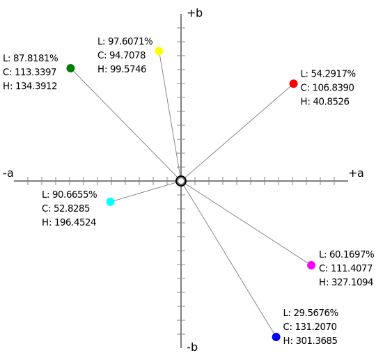
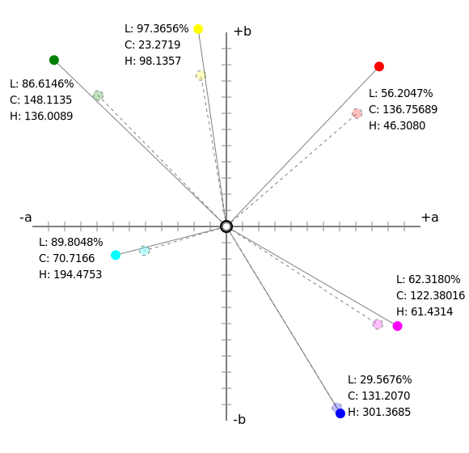
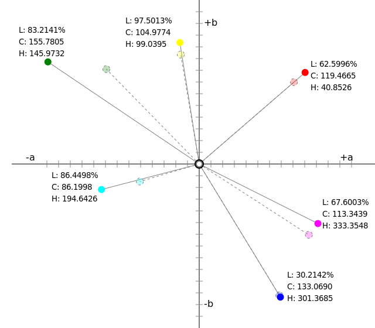
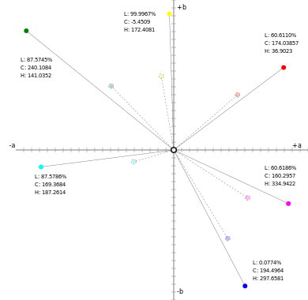
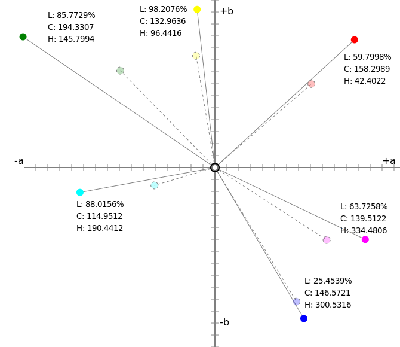
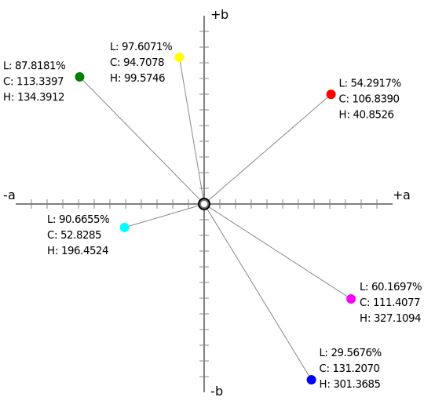
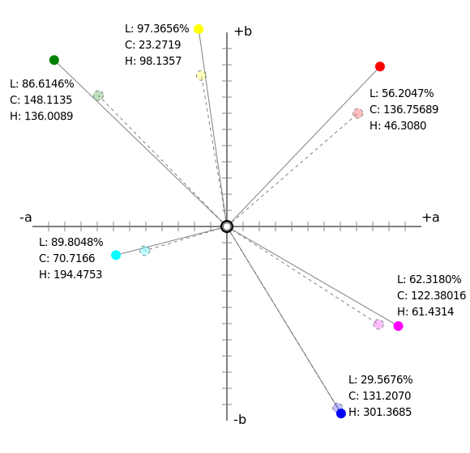
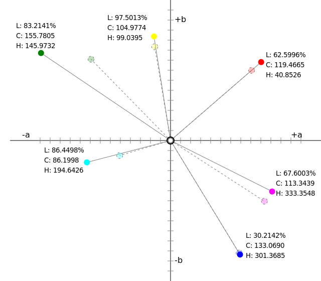
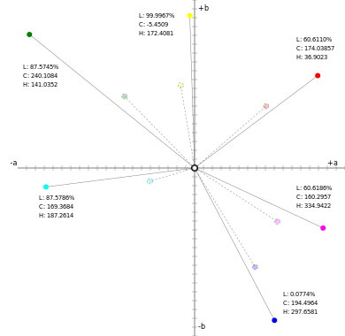
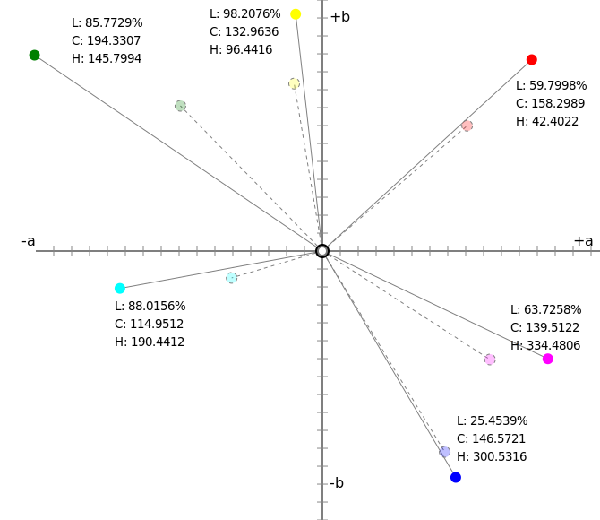

この仕様は、前景~色と~group不透明度のための
CSS `color$t 値と各種~propについて述べる。
◎
This specification describes CSS <color> values and properties for foreground color and group opacity.
この~moduleは、要素の~text内容の前景~色と不透明度を，作者が指定できるようにする~CSS~propについて述べる。
また、~CSS `color$t 値~型についても詳細に述べる。
◎
This module describes CSS properties which allow authors to specify the foreground color and opacity of the text content of an element. This module also describes in detail the CSS <color> value type.
この~moduleは、
CSS1,
CSS2,
CSS Color 3
にすでに存在する，色に関係する各種~propと値について定義するのみならず，新たな~propと値も定義する。
◎
It not only defines the color-related properties and values that already exist in CSS1, CSS2, and CSS Color 3, but also defines new properties and values.
特に，~sRGB以外の`色空間$内の色を指定できるようにする。
これまでは，~sRGB色域の外側にある高~彩度な色は
— 表示~機器が~supportしていようが —
~CSSにおいては利用できなかった。
~RGB
色空間が成す族に加えて，
~CMYKや
~KCMYGOV
などの，他の原色による`色空間$も~supportされる。
◎
In particular, it allows specifying colors in other colorspaces than sRGB; previously, the more saturated colors outside the sRGB gamut could not be used in CSS even if the display device supported them. In addition to the family of RGB colorspaces, colorspaces with other primaries such as CMYK or KCMYGOV are supported.
実装~報告（草案）
も可用である。
◎
A draft implementation report is available.
`色@
（ `color^en ）は、ヒトによる視覚的な知覚による［
光や光で照らされた物体
］の（数量や~textによる）定義である。
客観的なヒトの色~知覚の研究は、
色計量y（
colorimetry
）と呼ばれる。
2 つの物体は、
波長分布（
spectum
）が異っていても，物理的に同じ感覚を生産する場合には，同じ色であるとされる。
◎
A color is a definition (numeric or textual) of the human visual perception of a light or a physical object illuminated with light. The objective study of human color perception is termed colorimetry. If two objects have different spectra, but produce the same physical sensation, we say they have the same color.
例えば，緑色な葉, および［
~computer~screenに表示された その葉の写真, 印刷されたそれ
］は、それぞれに異なる手段で緑色~感覚を生産している。
当の［
~screen, 印刷機
］とも`較正-済み$である場合、［
葉, 写真, 印刷されたそれ
］における緑色は，同じ見かけになる。
◎
For example a green leaf, a photograph of that leaf displayed on a computer screen, and a print of that photograph, are all producing a green sensation by different means. If the screen and the printer are calibrated, the green in the leaf, and the photo, and the print will look the same.
`色空間@
（ `colorspace^en ／ `color space^en ）は、［
下層の色計量~modelに関して，どの色にも明瞭かつ客観的に測定-可能な意味が備わる
］よう組織化された色たちからなる。
これはまた，［
複数の色空間において同じ色を表出できること／
同じ見かけを~~保ったまま別の色空間へ変形できること
］を意味する。
◎
A colorspace is an organization of colors with respect to an underlying colorimetric model, such that there is a clear, objectively-measurable meaning for any color in that colorspace. This also means that the same color can be expressed in multiple colorspaces, or transformed from one colorspace to another, while looking the same.
分光光度計で測定され，見出される葉の色
`41.587% 50.3670% 36.664%^rgb
は、
`lch(51.2345% 21.2 130)^v
になる。
それは `lab(51.2345% -13.6271 16.2401)^v に等しい。
◎
A leaf is measured with a spectrophotometer and found to have the color lch(51.2345% 21.2 130) which is lab(51.2345% -13.6271 16.2401).
同じ色は、様々な色空間でも表出できる：
◎
This same color could be expressed in various colorspaces:
［
`色空間$／色を生産する機器
］は、それに対し測定される物理-特性（利用する原色の純色度（ `chromaticity^en ）や，所与の入力の集合に対する応答として生産される色など）が既知であるとき、
`有特性@
（ `characterised^en ）という。
この特性評価~情報は、`~profile^em内に格納される。
最も共通的な［
色~profileの型
］は、~ICC（ `International Color Consortium^en ） `ICC$r により定義される。
◎
When the measured physical characteristics (such as the chromaticities of the primary colors it uses, or the colors produced in response to a given set of inputs) of a colorspace or a color-producing device are known, it is said to be characterised. This characterization information is stored in a profile. The most common type of color profile is defined by the International Color Consortium (ICC) [ICC].
加えて，機器は、［
白色点, ~grayの中立度, 色調~応答の予測-能と一貫性
］などの較正~対象に合わせて調整されているならば，
`較正-済み@
（ `calibrated^en ）という。
◎
If in addition adjustments have been made so that a device meets calibration targets such as white point, neutrality of greys, predictability and consistency of tone response, then it is said to be calibrated.
現実の物理-機器は、ヒトの眼が見れる あらゆる色は未だ生産できていない。
所与の機器が生産し得る色の範囲を
`色域@
（ `gamut^en ）という（ `gamma^en（ ~gamma ）と混同しないように）。
色域が制限された機器は、虹に見出される様な極~彩度な色は，生産できない。
◎
Real physical devices cannot yet produce every possible color that the human eye can see. The range of colors that a given device can produce is termed the gamut (not to be confused with gamma). Devices with a limited gamut cannot produce very saturated colors, like those found in a rainbow.
各種 `色空間$の色域は、表出できる色の体積（ `cubic LAB^en 単位【？】）で比較できる。
次の表に，~CSSにて可用な`定義済み色空間$の体積を示す：
◎
The gamuts of different colorspaces may be compared by looking at the volume (in cubic LAB units) of colors that can be expressed. The following table examines the predefined colorspaces available in CSS.
この~propは、要素の~text内容の前景を埋める色を述べる。
加えて、 `currentcolor$v が解決される値も供する。
◎
This property describes the foreground fill color of an element’s text content. In addition, it provides the value that currentcolor resolves to.
所与の色を指定する仕方には、いくつかの構文が~~用意されている。
◎
There are several different ways to syntactically specify a given color.
例えば、~lime~green`lime^swatchを指定するには：
◎
For example, to specify lime green:
`color$t 型については、後の節にて定義される。
◎
<color>
◎
The <color> type is defined in a later section.
注記：
一般に，この~propは、その~alpha成分も含め， “色~付き~glyph” に対する効果はない
— 組込みの~paletteにより色が与えられている，一部の~font内の絵文字など。
一部の有色~fontは、前景~色を~~参照できる
— OpenType の COLR table 内の~palette~entry 0xFFFF や,
SVG-in-OpenType 内の `context-fill^v 値など【参照： ~SVGの `paint$t 型】。
その事例では、前景~色はこの~propにより設定され，
`currentcolor$v 値と同じに働く。
◎
Note: In general, this property, including its alpha component, has no effect on "color glyphs", such as emoji in some fonts, which are colored by a built-in palette. Some colored fonts are able to refer to the foreground color, such as palette entry 0xFFFF in COLR table of OpenType, and context-fill value in SVG-in-OpenType. In that case, the foreground color is set by this property, identical to how currentcolor value works.
4. 色の表現-法： `color$t 型
~CSSには、色~値を指定するための構文がいくつかある。
それらには、~sRGB色を その各~channelに直に指定するもの
— `~hex色$ 記法や `rgb$f 関数など —
もあれば，もっとヒトに易しく書けて解せるもの
— `hsl$f 関数, `lch$f 関数や，`有名~色$の長大な~listなど —
もある。
◎
CSS has several syntaxes for specifying color values. Some directly specify an sRGB color by its channels, such as the hex color notation or rgb() function. Others are more human-friendly to write and understand, such as the hsl() and lch() functions, or the long list of named colors.
4.1. `color^t 構文
色は、［
“~channel” とも呼ばれる，色~空間~内の ある軸を表現している成分
］たちが成す~listとして表現される。
各~channelがとり得る値には，最小と最大があり、その合間にあるどの値もとれる。
加えて、どの色にも，不透明度
— 後景が色の背後からどの程度透けて見えるか —
を指示する
`~alpha成分@
が付帯する。
◎
Colors are represented as a list of components, also sometimes called “channels”, representing axises in the color space. Each channel has a minimum and maximum value, and can take any value between those two. Additionally, every color is accompanied by an alpha component, indicating how transparent it is, and thus how much of the backdrop one can see behind the color.
~CSSにおける色は、
`color@t
型で表現される。
◎
Colors in CSS are represented by the <color> type:
うち，次に挙げるものは、
`色-関数@
と総称される
⇒
`rgb()$t,
`rgba()$t,
`hsl()$t,
`hsla()$t,
`hwb()$t,
`lab()$t,
`lch()$t,
`color()$t
◎
The color-functions are <rgb()>, <rgba()>, <hsl()>, <hsla()>, <hwb()>, <lab()>, <lch()>, and <color()>.
これらのうち［
`hsl()$t,
`hsla()$t,
`hwb()$t,
`lch()$t
］は、次による円柱極座標~表現を利用して，色を指定する
⇒＃
`hue$t （色相）角度,
明度（ ~black 〜 ~white ）を表現している中心-軸,
彩度または色度（中立な~grayからどれだけ離れているか）を表現している半径
◎
Of those, <hsl()>, <hsla()>, <hwb()> and <lch()> are cylindrical polar representations, which specify color using a <hue> angle, a central axis representing lightness (black-to-white), and a radius representing saturation or chroma (how far the color is from a neutral grey)
◎
For easy reference in other specifications, opaque black is defined as the color rgb(0 0 0 / 100%); transparent black is the same color, but fully transparent—i.e. rgb(0 0 0 / 0%).
4.2. `hue^t 構文
色相は、
`色相環^
における角度として表現される。
◎
Hue is represented as an angle of the color circle (the rainbow, twisted around into a circle).
`hue@t
= `number$t
| `angle$t
この値は， `deg^css 単位（度（°）, `degree^en ）で与えられることが多いので、単位なしの実数として与えることもでき， `deg^css 単位として解釈される。
◎
Because this value is so often given in degrees, the argument can also be given as a number, which is interpreted as a number of degrees.
特定0の色相に対応する角度と~~分布は、色空間に依存する。
例えば、~sRGB色空間を利用する［
~HSL／~HWB
］においては，~sRGB~greenは 120° になり、~LCHにおいては［
~sRGB~greenは 134.39° ／
`display-p3$v ~greenは 136.01° ／
`a98-rgb$v ~greenは 145.97° ／
`prophoto-rgb$v ~greenは 141.04°
］になる（これらはすべて濃淡が異なる~greenなので）。
◎
The angles and spacing corresponding to particular hues depend on the colorspace. For example, in HSL and HWB, which use the sRGB colorspace, sRGB green is 120 degrees. In LCH, sRGB green is 134.39 degrees, display-p3 green is 136.01 degrees, a98-rgb green is 145.97 degrees and prophoto-rgb green is 141.04 degrees (because these are all different shades of green).
色が中立な軸にごく近い場合、色相~角度は不定になる（例えば，~Labにおいては、
0 に近い ( a, b ) 値における~~微小な変化は，~LCH色相~角度における~~巨大な変化を与える）。
したがって、色相~角度は ~NaN が返されるときもある。
これは例えば、色相~補間に影響iする。
◎
For colors very close to the neutral axis, the hue angle becomes indeterminate (for example, in Lab, minute changes in near-zero a and b values give huge changes in LCH hue angle). Therefore, sometimes a hue angle of Nan (not a number) may be returned. This impacts, for example, hue interpolation.
4.3. 色により情報を運ぶときの~accessibility
色は、文書をより読易くし，有意な情報を追加できるが、色それ自体が重要な情報を運ぶ~~唯一の手段になるべきでない。
文書に色を利用する作者は、
`W3C Web Content Accessibility Guidelines^cite `WCAG20$r
（ Web 内容~accessibilityを得るための指針）を考慮するベキである。
◎
Although colors can add significant information to documents and make them more readable, color by itself should not be the sole means to convey important information. Authors should consider the W3C Web Content Accessibility Guidelines [WCAG20] when using color in their documents.
`1.4.1 Use of Color^em（色の利用）：
［
情報を運ぶ／動作を指示する／応答を促す／視覚的な要素を判別する
］ための視覚的な手段として，色のみに~~頼らないこと。
◎
1.4.1 Use of Color: Color is not used as the only visual means of conveying information, indicating an action, prompting a response, or distinguishing a visual element
4.4. 有tag画像の色~空間
`有tag画像@
（ `tagged video^en ）は、ある色~profileが
— 当の画像~形式に定義されるとおりに —
明示的にアテガわれた画像である。
これは，通例的には、~ICC~profile `ICC$r を含めることにより行われる。
◎
An tagged image is an image that is explicitly assigned a color profile, as defined by the image format. This is usually done by including an International Color Consortium (ICC) profile [ICC].
例えば，［
~JPEG `JPEG$r,
~PNG `PNG$r,
~TIFF `TIFF$r
］は、どれも~ICC~profileを埋込む手段を指定する。
◎
For example JPEG [JPEG], PNG [PNG] and TIFF [TIFF] all specify a means to embed an ICC profile.
画像~形式は、他の等価な
— 多くは、より~~簡潔な —
手法を利用することもある。
◎
Image formats may also use other, equivalent methods, often for brevity.
例えば~PNGは、~sRGB~ICC~profileを含めることなく，画像は~sRGB色空間とする~tagを明示的に付与する手段（
`sRGB chunk^en
）を指定する。
◎
For example, PNG specifies a means (the sRGB chunk) to explicitly tag an image as being in the sRGB colorspace, without including the sRGB ICC profile.
有tag~RGB画像, および［
~YCbCrなど，~RGBの変形nを利用している有tag画像
］は、［
色~profileや それを識別する他の情報
］が妥当である場合には、指定された色~空間~内にあるものと扱うモノトスル
— 妥当でない場合、画像は`無tag画像$として扱われる。
◎
Tagged RGB images, and tagged images using a transformation of RGB such as YCbCr, if the color profile or other identifying information is valid, must be treated as being in the specified color space.
◎
If the color profile or other identifying information is invalid, the image is treated as untagged images
例えば，［
~Display-P3~monitorを備える~systemで稼働している~browser
］は、［
~AdobeRGB1998 `AdobeRGB$r 色空間に属する有tag~JPEG画像
］を表示するときは、その色が正しく表示されるよう，~AdobeRGB1998から~Display-P3へ変換するモノトスル
— ~AdobeRGB1998に属する値を~Display-P3に属するかのように扱うと，不正な色を生産することになるので。
◎
For example, when a browser running on a system with a Display P3 monitor displays an JPEG image tagged as being in the Adobe® RGB (1998) [AdobeRGB] colorspace, it must convert the colors from Adobe® RGB (1998) to Display P3 so that they display correctly. It must not treat the Adobe® RGB (1998) values as if they were Display P3 values, which would produce incorrect colors.
4.6. 無tagな色が成す色~空間
［
~HTMLにて指定される色 ／ `無tag画像$
］は、他が指定されない限り，~sRGB色~空間（ `SRGB$r ）に属すると扱うモノトスル。
◎
Colors specified in HTML, and untagged images must be treated as being in the sRGB color space ([SRGB]) unless otherwise specified.
`無tag画像@
（ `untagged image^en ）とは、［
当の画像~形式による定義に従って，色~profileが明示的にアテガわれている画像
］ではない画像を指す。
【！`有tag画像$の否定とは言い切れない】
◎
An untagged image is an image that is not explicitly assigned a color profile, as defined by the image format.
この規則は、動画には適用されないことに注意。
`無tag動画@
（ `untagged video^en ）は、~ITUが定義する色空間に属するものと予め見做されるべきなので。
◎
Note that this rule does not apply to untagged videos, since untagged video should be presumed to be in an ITU-defined colorspace.
720p 未満においては、それは `ITU-R-BT.601$r を指す。
◎
At below 720p, it is Recommendation ITU-R BT.601 [ITU-R-BT.601]
720p においては、それは `SMPTE296$r（ 709 と同じ色計量y）を指す。
◎
At 720p, it is SMPTE ST 296 (same colorimetry as 709) [SMPTE296]
1080p においては、それは `ITU-R-BT.709$r を指す。
◎
At 1080p, it is Recommendation ITU-R BT.709 [ITU-R-BT.709]
4k （ UHDTV【~~超高精細テレビ】）以上においては、それは `Rec.2020$r を指す。
◎
At 4k (UHDTV) and above, it is ITU-R BT.2020 [Rec.2020] for SDR video
4.6. `color$t 値の解決-法
他が指定されない限り，特定0の~propに`指定され$た色は、次に従って，
`算出d色@
と呼ばれる`算出d値$に解決され, さらに
`使用~色@
と呼ばれる`使用~値$に解決される：
◎
Unless otherwise specified for a particular property, specified colors are resolved to computed colors and then further to used colors as follows:
`transparent$v
◎
transparent
［
算出d値, 使用~値
］とも`透明な黒$。
◎
The computed and used value is transparent black.
`~hex色$
◎
hex colors
`rgb$f ／ `rgba$f
値
◎
rgb() and rgba() values
`hsl$f ／ `hsla$f
値
◎
hsl() and hsla() values
`hwb$f 値
◎
hwb() values
`有名~色$
◎
named colors
［
算出d値, 使用~値
］とも、［
対応する~sRGB色,
指定された~alpha~channel（未指定な場合の既定は不透明）
］が成す~pair。
◎
The computed and used value is the corresponding sRGB color paired with the specified alpha channel (defaulting to opaque if unspecified).
`lab$f ／ `lch$f
値
◎
lab() and lch() values
［
算出d値, 使用~値
］とも、［
対応する~CIE~Lab色,
指定された~alpha~channel（未指定な場合の既定は不透明）
］が成す~pair。
◎
The computed and used value is the corresponding CIE Lab color paired with the specified alpha channel (defaulting to opaque if unspecified).
これらの値は
作業用の色~空間
に影響するか？
（ `3844$issue ）
◎
Does working color space affect these values? <https://github.com/w3c/csswg-drafts/issues/3844>
`color$f
値
◎
color() values
［
算出d値, 使用~値
］とも、［
指定された`色空間$内の色,
指定された~alpha~channel（未指定な場合の既定は不透明）
］が成す~pair。
◎
The computed and used value is the color in the specified colorspace, paired with the specified alpha channel (defaulting to opaque if unspecified).
`device-cmyk$f 値
◎
device-cmyk() values
［
算出d値, 使用~値
］とも、［
指定された機器に特有な~CMYK色,
指定された~alpha~channel（未指定な場合の既定は不透明）
］が成す~pair。
◎
The computed and used value is the specified device-specific CMYK color, paired with the specified alpha channel (defaulting to opaque if unspecified).
`実際の値$は、当の演算に基づいて変わり得る：
◎
The actual value can vary based on the operation;
~CMYK能力がある機器へ描画するときには、~CMYK色として描画されてヨイ。
◎
for rendering to a CMYK-capable device, it may be rendered as a CMYK color;
［
~CMYKでない色と混色する／~CMYKでない機器へ描画する
］ときには、
§ 機器に依存する~CMYK色： `device-cmyk^f 関数
に指定されるとおりに変換するモノトスル。
◎
for blending with non-CMYK colors or rendering to a non-CMYK device, it must be converted as specified in § 12 Device-dependent CMYK Colors: the device-cmyk() function.
`~system色$
◎
system colors
各 `system-color$t ~keywordは、それ自身に算出される。
その使用~値は、その【どの？】色~空間~内の対応する色になる。
◎
Each <system-color> keyword computes to itself. Its used value is the corresponding color in its color space.
算出d値は、それ自身になる。
◎
The currentcolor keyword computes to itself.
使用~値は
⇒＃
`color$p ~propにおいては`継承d値$になる／
他の~propにおいては 同じ要素~上の `color$p ~propの使用~値になる
◎
In the color property, its used value is the inherited value. In any other property, its used value is the used value of the color property on the same element.
注記：
すなわち， `currentcolor$v 値が継承される場合には、その `color$p ~propの値としてではなく，~keywordとして継承される
— なので，子孫は、自前の `color$p ~propを利用して，それを解決することになる。
◎
Note: This means that if the currentcolor value is inherited, it’s inherited as a keyword, not as the value of the color property, so descendants will use their own color property to resolve it.
`color$t の`解決d値$は、`使用~値$と同じになる。
◎
The resolved value of a <color> is its used value.
~channelの切詰ngは、いつ生じるベキか？
（ `3845$issue ）
◎
When should channel-clamping occur? <https://github.com/w3c/csswg-drafts/issues/3845>
5. ~sRGB色
`~sRGB@
色~空間による~CSS色は、値の三組
— ~red, ~green, ~blue —
により表現され，~sRGB色~空間 `SRGB$r 内のある点を識別する。
この色~空間は、国際的に認識される，機器に依存しない色~空間であり、~computer~screen上で表示される色を指定するときのみならず，印刷機の様な他の型の機器~上で色を指定するときにも有用にもなる。
◎
CSS colors in the sRGB color space are represented by a triplet of values—red, green, and blue—identifying a point in the sRGB color space [SRGB]. This is an internationally-recognized, device-independent color space, and so is useful for specifying colors that will be displayed on a computer screen, but is also useful for specifying colors on other types of devices, like printers.
~CSSでは、~sRGBでない`色空間$の利用も許容される。
それらについては、 § `定義済み色空間$に述べる。
◎
CSS also allows the use of non-sRGB colorspaces, as described in § 10.2 Predefined colorspaces: srgb, display-p3, a98-rgb, prophoto-rgb, rec2020, xyz and lab'..
◎
CSS provides several methods of directly specifying an sRGB color: hex colors, rgb()/rgba() color-functions, hsl()/hsla() color-functions, hwb() color-function, named colors, and the transparent keyword.
5.1. ~RGB関数： `rgb^f, `rgba^f
`rgb$f 関数は、［
~red, ~green, ~blue
］~channelを直に指定して~sRGB色を定義する。
その構文は次で与えられる：
◎
The rgb() function defines an sRGB color by specifying the red, green, and blue channels directly. Its syntax is:
最初の 3 個の引数は、順に，色の［
~red, ~green, ~blue
］~channelを指定する。
`percentage$t に対する
`0%^v は、~sRGB色域においてその色~channelの最小~値を表現し，
`100%^v は最大~値を表現する。
`number$t は `percentage$t に等価であるが，とる範囲は異なる：
ここでも `0^v は色~channelの最小~値を表現するが，最大~値は `255^v が表現する。
これらの値は、多くの~graphic~engineが，色~channelを［
0 〜 255 の整数を保持できる単独の~byte
］として内部的に格納する事実から来る。
実装は，アリな所では、~channelの精度を［
著作-／計算-
］されたとおりに尊守するべきである。
これがアリでない場合、~channelは利用される最高~精度で最も近い値に（ 2 数に等しく近い場合は高い方に）丸められるべきである。
◎
The first three arguments specify the red, green, and blue channels of the color, respectively. 0% represents the minimum value for that color channel in the sRGB gamut, and 100% represents the maximum value. A <number> is equivalent to a <percentage>, but with a different range: 0 again represents the minimum value for the color channel, but 255 represents the maximum. These values come from the fact that many graphics engines store the color channels internally as a single byte, which can hold integers between 0 and 255. Implementations should honor the precision of the channel as authored or calculated wherever possible. If this is not possible, the channel should be rounded to the closest value at the highest precision used, rounding up if two values are equally close.
~~最後の引数 `alpha-value$t は、色の~alphaを指定する。
`number$t 値の有用な範囲は、
`0^v （全に透明な色を表現する） 〜
`1^v （全に不透明な色を表現する）である。
`percentage$t 値の範囲は、
`0%^v （全に透明な色を表現する） 〜
`100%^v （全に不透明な色を表現する）である。
省略-時の既定は `100%^v になる。
◎
The final argument, the <alpha-value>, specifies the alpha of the color. If given as a <number>, the useful range of the value is 0 (representing a fully transparent color) to 1 (representing a fully opaque color). If given as a <percentage>, 0% represents a fully transparent color, while 100% represents a fully opaque color. If omitted, it defaults to 100%.
これらの範囲~外の値も無効ではないが、算出d値の時点で ここで定義した範囲に切詰められる。
◎
Values outside these ranges are not invalid, but are clamped to the ranges defined here at computed-value time.
旧来の理由から、
`rgb$f は，すべての引数を~commaで分離する代替-構文も~supportする：
◎
For legacy reasons, rgb() also supports an alternate syntax that separates all of its arguments with commas:
同じく旧来の理由から、
`rgba@f
関数も存在する
— その文法と挙動は `rgb$f と同じである。
◎
Also for legacy reasons, an rgba() function also exists, with an identical grammar and behavior to rgb().
5.2. RGB ~hex記法： `#RRGGBB^v
~CSS
`~hex色@
記法により、各~channelに~hex数を与えて~sRGB色を指定することも許容される。
それは、~computer~codeで色を直に与えるときによくある書き方に類似する。
また、 `rgb$f 記法より短く書ける。
◎
The CSS hex color notation allows an sRGB color to be specified by giving the channels as hexadecimal numbers, which is similar to how colors are often written directly in computer code. It’s also shorter than writing the same color out in rgb() notation.
`hex-color@t
の構文は、［［
3 ／ 4 ／ 6 ／ 8
］個の~hex数字が成す並び
］を.値にとる `hash-token$t ~tokenである。
言い換えれば、~hex色は，［
~hash文字 `#^l, ［
3 ／ 4 ／ 6 ／ 8
］個の［
数字 0 〜 9, 英字 a 〜 f
］］が成す並びで記される（英字は大小無視なので， `#00ff00^v は `#00FF00^v と~~同じになる）。
◎
The syntax of a <hex-color> is a <hash-token> token whose value consists of 3, 4, 6, or 8 hexadecimal digits. In other words, a hex color is written as a hash character, "#", followed by some number of digits 0-9 or letters a-f (the case of the letters doesn’t matter - #00ff00 is identical to #00FF00).
~hex記法を~RGB色に復号する方法は、与えられた~hex数字の個数に応じて：
◎
The number of hex digits given determines how to decode the hex notation into an RGB color:
6 桁
2 桁ごとに~hex数として解釈され、順に，色の［
~red, ~green, ~blue
］~channelを指定する。
ここで，［
`00^v が色の最小~値／
`ff^v （ 10 進数で255 ）が色の最大~値
］を表現する。
色の~alpha~channelは全に不透明になる。
◎
The first pair of digits, interpreted as a hexadecimal number, specifies the red channel of the color, where 00 represents the minimum value and ff (255 in decimal) represents the maximum. The next pair of digits, interpreted in the same way, specifies the green channel, and the last pair specifies the blue. The alpha channel of the color is fully opaque.
例えば， `#00ff00^v は、
`0 255 0^rgb `rgb(0 255 0)^v と同じ色（~lime~green）を表現する。
◎
In other words, #00ff00 represents the same color as rgb(0 255 0) (a lime green).
8 桁
最初の 6 桁は、 6 桁~記法と~~同じに解釈される。
最後の 2 桁も~hex数に解釈され、色の~alpha~channelを指定する。
ここで，［
`00^v は 全に透明な色／
`ff^v は 全に不透明な色
］を表現する。
◎
The first 6 digits are interpreted identically to the 6-digit notation. The last pair of digits, interpreted as a hexadecimal number, specifies the alpha channel of the color, where 00 represents a fully transparent color and ff represent a fully opaque color.
したがって， `#0000ffcc^v は、
`0% 0% 100% / 80%^rgb `rgb(0% 0% 100% / 80%)^v【！rgb(0 0 100% / 80%)】
と同じ色（少しばかり透明な~blue）を表現する。
◎
In other words, #0000ffcc represents the same color as rgb(0 0 100% / 80%) (a slightly-transparent blue).
3 桁
これは、 6 桁~記法を短く記す変種である。
1 桁ごとに~hex数として解釈され、順に，色の［
~red, ~green, ~blue
］~channelを指定する。
ここで，［
`0^v が色の最小~値／
`f^v が色の最大~値
］を表現する。
色の~alpha~channelは全に不透明になる。
◎
This is a shorter variant of the 6-digit notation. The first digit, interpreted as a hexadecimal number, specifies the red channel of the color, where 0 represents the minimum value and f represents the maximum. The next two digits represent the green and blue channels, respectively, in the same way. The alpha channel of the color is fully opaque.
この構文は、［
すべての桁を “二重に” して得される 6 桁~記法と~~同じになる
］と説明されることも多い。
例えば、 `#123^v による表記は，
`#112233^swatch `#112233^v
による表記と同じ色を指定する。
この手法は、 6 桁~記法より “解像度” が低い。
3 桁の~hex構文では 4096 色しか表出できない一方で，
6 桁の~hex構文では およそ 17 百万~色がアリになる。
◎
This syntax is often explained by saying that it’s identical to a 6-digit notation obtained by "duplicating" all of the digits. For example, the notation #123 specifies the same color as the notation #112233. This method of specifying a color has lower "resolution" than the 6-digit notation; there are only 4096 possible colors expressible in the 3-digit hex syntax, as opposed to approximately 17 million in 6-digit hex syntax.
4 桁
これは、 8 桁~記法を短くした変種であり，
3 桁~記法と同じ仕方で “展開される” 。
最初の 3 桁は 3 桁~記法と同様に解釈される。
最後の桁は~alpha~channelを表現し，同様に［
`0^v が最小~値／
`f^v が最大~値
］に解釈される。
◎
This is a shorter variant of the 8-digit notation, "expanded" in the same way as the 3-digit notation is. The first digit, interpreted as a hexadecimal number, specifies the red channel of the color, where 0 represents the minimum value and f represents the maximum. The next three digits represent the green, blue, and alpha channels, respectively.
6. 色~keyword
`color$t 用の様々な数量-構文に加え、~CSSでは，代わりに利用できる，色~keywordの集合もいくつか定義する
— それぞれには、自前の［
利点／利用事例
］がある。
◎
In addition to the various numeric syntaxes for <color>s, CSS defines several sets of color keywords that can be used instead—each with their own advantages or use cases.
6.1. 有名~色
共通的な色を もっと容易に［
書ける／読める
］ようにするため、~CSSは，長大な
`有名~色@
の集合
—
`named-color@t
—
を定義する。
`named-color$t は、 `ident$t として記され，
`color$t が受容される所ならどこでも利用できる。
~CSSにより定義される通例の `ident$t と同様に、これらの~keywordは，すべて`~ASCII大小無視$である。
◎
CSS defines a large set of named colors, so that common colors can be written and read more easily. A <named-color> is written as an <ident>, accepted anywhere a <color> is. As usual for CSS-defined <ident>s, all of these keywords are ASCII case-insensitive.
これらの名前は、~sRGB色に解決される。
◎
The names resolve to colors in sRGB.
~CSSの有名~色のうち：
◎
↓
次に挙げる 16 色は、元々は~HTMLに由来する
⇒＃
`aqua^v,
`black^v,
`blue^v,
`fuchsia^v,
`gray^v,
`green^v,
`lime^v,
`maroon^v,
`navy^v,
`olive^v,
`purple^v,
`red^v,
`silver^v,
`teal^v,
`white^v,
`yellow^v
◎
16 of CSS’s named colors come from HTML originally: aqua, black, blue, fuchsia, gray, green, lime, maroon, navy, olive, purple, red, silver, teal, white, and yellow.＼
残りの大部分は、
Unix 系の~systemで~consoleの色を指定するときに利用されている
X11 色~systemのある~versionに由来する。
◎
Most of the rest come from one version of the X11 color system, used in Unix-derived systems to specify colors for the console.＼
（ 2 つの特別な色~値 `transparent$v, `currentcolor$v は、それ用の節にて特別に定義される。）
◎
(Two special color values, transparent and currentcolor, are specially defined in their own sections.)
次の一覧に、定義される すべての（不透明な）有名~色を挙げる：
◎
The following table defines all of the opaque named colors, by giving equivalent numeric specifications in the other color syntaxes.
注記：
この色の~listとそれらの定義は、
SVG 1.1 にて定義される有名~色~list
の上位集合である。
【 SVG 1.1 に無い色~名は `rebeccapurple$v のみ。】
◎
Note: this list of colors and their definitions is a superset of the list of named colors defined by SVG 1.1.
歴史的な理由から、これは X11 色~集合とも呼ばれている。
◎
For historical reasons, this is also referred to as the X11 color set.
注記：
X11 色~systemの歴史は興味深く，
`Alex Sexton^en 氏による優れた公演
“Peachpuffs and Lemonchiffons”
に要約されている。
◎
Note: The history of the X11 color system is interesting, and was excellently summarized by Alex Sexton in his talk “Peachpuffs and Lemonchiffons”.
6.2. ~system色
一般に， `system-color$t ~keywordは、［
利用者／~browser／~OS
］が`既定の^em色として選んだものを反映する。
この理由から、それらは概して，~browserの既定の~stylesheet内で利用される。
◎
In general, the <system-color> keywords reflect default color choices made by the user, the browser, or the OS. They are typically used in the browser default stylesheet, for this reason.
判読し易さを保守するため、
`system-color$t ~keywordは，明な~modeから暗な~modeへの（およびその逆の）変化にも応答する。
◎
To maintain legibility, the <system-color> keywords also respond to light mode or dark mode changes.
例えば，伝統的な `blue^swatch ~blueな~link~textは、
`white^swatch ~whiteな背景~上では判読し易くなるが（~WCAG~contrastは 8.59:1 になり，~AAAに合格する），
`black^swatch ~blackな背景~上では判読し難くなる（~WCAG~contrastは 2.44:1 になり，~AAに合格しない）。
代わりに，暗な~modeにおいては
`#81D9FE^swatch `#81D9FE^v
など，より明な~blueが利用されることになろう（~WCAG~contrastは 13.28:1 になり，~AAAに合格する）。
◎
For example, traditional blue link text is legible on a white background (WCAG contrast 8.59:1, AAA pass) but would not be legible on a black background (WCAG contrast 2.44:1, AA fail). Instead, a lighter blue such as #81D9FE would be used in dark mode (WCAG contrast 13.28:1, AAA pass).
判読し易い~link~text
◎
Legible link text
判読し難い~link~text
◎
Illegible link text
判読し易い~link~text
◎
Legible link text
しかしながら，`強制d色~mode$においては、~page上のほとんどの色は，利用者が選んだ制約された~paletteの中に強制される。
各種
`system-color@t
~keywordは，この~paletteを成す色を公開して、~pageの残りを，この制約された~paletteに統合できるようにする。
◎
However, in forced colors mode, most colors on the page are forced into a restricted, user-chosen palette. The <system-color> keywords expose these user-chosen colors so that the rest of the page can integrate with this restricted palette.
`媒体~特能$ `forced-colors$d が `active^v にある下では、作者は
— ~page全体にわたる判読し易さと一貫性を確保するため, および［
利用者が強制した色，~pageが選んだ色
］が~~不釣り合いになるのを避けるため —
［
§ 強制d色~modeに影響される~prop
`CSS-COLOR-ADJUST-1$r に挙げられるもの
］以外の~propには，色~値として いずれかの `system-color$t ~keywordを利用する`ベキ^emである。
◎
When the forced-colors media feature is active, authors should use the <system-color> keywords as color values in properties other than those listed in CSS Color Adjust §3.1 Properties Affected by Forced Colors Mode, to ensure legibility and consistency across the page and avoid an uncoordinated mishmash of user-forced and page-chosen colors.
`system-color$t ~keyword用の値を~browserが与える場合（~OSの既定や利用者が選んだものではなく）、~browserは，
合致している［背景, 前景］~pair
が最小な~WCAG~AA~contrast以上になることを確保するベキである。
しかしながら，（より高／低~contrast用の）利用者~選好は、［
~browser選好,
利用者~stylesheet,
~OSの既定を改めること
］のどれで設定されようが，この要件より優先されるモノトスル
◎
When the values of <system-color> keywords come from the browser, (as opposed to being OS defaults or user choices) the browser should ensure that matching foreground/background pairs have a minimum of WCAG AA contrast. However, user preferences (for higher or lower contrast), whether set as a browser preference, a user stylesheet, or by altering the OS defaults, must take precedence over this requirement.
作者はまた，これらの~keywordをいつでも利用して`ヨイ^emが、適切な~contrastを確保するため，利用する色が
合致している［背景, 前景］~pair
を成すよう注意深くなる`ベキ^emである
— 合致しない~pairには、特定0の~contrast関係性は保証されないので（例：
`Canvas$v と `ButtonText$v
）。
◎
Authors may also use these keywords at any time, but should be careful to use the colors in matching background-foreground pairs to ensure appropriate contrast, as any particular contrast relationship across non-matching pairs (e.g. Canvas and ButtonText) is not guaranteed.
`system-color$t ~keywordは、次に従って定義される：
◎
The <system-color> keywords are defined as follows:
`canvas^swatch
［
~app内容／文書
］の背景。
◎
Background of application content or documents.
`CanvasText@v
`canvastext^swatch
［
~app内容／文書
］内の~text。
◎
Text in application content or documents.
`LinkText@v
`linktext^swatch
［
作動中でない／訪問-済みでない
］~link内の~text。
伝統的には~blue。
◎
Text in non-active, non-visited links. For light backgrounds, traditionally blue.
`VisitedText@v
`visitedtext^swatch
訪問-済み~link内の~text。
伝統的には~purple。
◎
Text in visited links. For light backgrounds, traditionally purple.
`ActiveText@v
`activetext^swatch
作動中の~link内の~text。
伝統的には~red。
◎
Text in active links. For light backgrounds, traditionally red.
`ButtonFace@v
`buttonface^swatch
~push~button用の~~表面~背景~色。
◎
The face background color for push buttons.
`ButtonText@v
`buttontext^swatch
~push~button上の~text。
◎
Text on push buttons.
`ButtonBorder@v
`buttonborder^swatch
~push~button用の基底~border色。
◎
The base border color for push buttons.
`Field@v
`field^swatch
入力-欄の背景。
◎
Background of input fields.
`FieldText@v
`fieldtext^swatch
入力-欄~内の~text。
◎
Text in input fields.
`Highlight@v
`highlight^swatch
選択されている［
~itemや~text
］の背景。
◎
Background of selected items/text.
`HighlightText@v
`highlighttext^swatch
選択されている［
~itemや~text
］の~text。
◎
Text of selected items/text.
`Mark@v
`mark^swatch
特別に~markされている~textの背景（~HTML `mark$e 要素など）。
◎
Background of text that has been specially marked (such as by the HTML mark element).
`MarkText@v
`marktext^swatch
特別に~markされている~text（~HTML `mark$e 要素など）。
◎
Text that has been specially marked (such as by the HTML mark element).
`GrayText@v
`graytext^swatch
不能化された~text（ `gray^swatch ~grayになることが多いが、常にそうなるとは限らない）。
◎
Disabled text. (Often, but not necessarily, gray.)
注記：
他のすべての`~keyword$と同じく、これらの名前は`~ASCII大小無視$である。
判読し易くなるよう，ここでは大文字混じりで示されているが。
◎
Note: As with all other keywords, these names are ASCII case-insensitive. They are shown here with mixed capitalization for legibility.
特定0の~system~UI概念がない~system用には、指定d値は，［
存在する，最も近く関係する~system色
］値に対応付けられるベキである。
◎
For systems that do not have a particular system UI concept, the specified value should be mapped to the most closely related system color value that exists.＼
◎
The following system color pairings are expected to form legible background-foreground colors:
• Canvas background with CanvasText, LinkText, VisitedText, ActiveText foreground.
• ButtonFace background with ButtonText foreground.
• Field background with FieldText foreground.
• Highlight background with HighlightText foreground.
加えて， `GrayText$v は、【他の~system色と~pairにされたとき】読易くすることが期待される
— 背景によっては、~contrast比が低くなるが。
◎
Additionally, GrayText is expected to be readable, though possibly at a lower contrast rating, over any of the backgrounds.
◎
For example, the system color combinations in the browser you are currently using:
• Canvas with CanvasText CanvasText
• Canvas with LinkText LinkText
• Canvas with VisitedText VisitedText
• Canvas with ActiveText ActiveText
• Canvas with GrayText GrayText
• ButtonFace with ButtonText ButtonText
• ButtonFace with GrayText GrayText
• Field with FieldText FieldText
• Field with GrayText GrayText
• Highlight with HighlightText HighlightText
• Highlight with GrayText GrayText
~CSSの早期の~versionは，追加的な `system-color$t を定義していたが、それ以来，非推奨にされた。
それらは、
§ 非推奨にされた~CSS~system色
にて文書~化されている。
◎
Earlier versions of CSS defined additional <system-color>s, which have since been deprecated. These are documented in Appendix A: Deprecated CSS System Colors.
注記：
`system-color$t は、ある［
~privacy／~security
］~riskを招く
— 詳細は、
§ ~securityと~privacyの考慮点に。
◎
Note: The <system-color>s incur some privacy and security risk, as detailed in § 16 Security and Privacy Considerations.
6.3. `transparent^v ~keyword
~keyword
`transparent@v
は、`透明な黒$を指定する。
これは、 `named-color$t の一種である。
【と記されているが、 `color$t の構文にて示唆されるように，その一部を成すものではない。】
◎
The keyword transparent specifies a transparent black. It is a type of <named-color>.
6.4. `currentcolor^v ~keyword
~keyword
`currentcolor@v
は、同じ要素~上の `color$p ~propの値を表現する。
その`使用~値$は、
§ `color^t 値の解決-法
により決定される。
◎
The keyword currentcolor represents value of the color property on the same element. Its used values is determined by resolving color values.
`currentcolor$v ~keywordの利用-法を示す単純な例をここに示す：
◎
Here’s a simple example showing how to use the currentcolor keyword:
例えば、初期~値が `currentcolor$v である
`text-emphasis-color$p ~prop
`CSS3-TEXT-DECOR$r
は、既定でその~text色に合致する
— `color$p ~propが要素ごとに変化するときでも。
◎
For example, the text-emphasis-color property [CSS3-TEXT-DECOR], whose initial value is currentcolor, by default matches the text color even as the color property changes across elements.
<p><em>ある<strong>本当に</strong>強勢された~text。</em>
<style>
p { color: black; }
em { text-emphasis: dot; }
strong { color: red; }
</style>
`text-emphasis^dgm
上の例における圏点の色は、~text［
"ある" ／ "~~強勢されたテキスト"
］では~blackになるが，~text "~~本当に" では~redになる。
◎
In the above example, the emphasis marks are black over the text "Some" and "emphasized text", but red over the text "really".
注記：
~CSSにおける，複数の単語からなる~keywordは、通例的には，その各~成分~単語を~hyphenで分離するが、 `currentcolor$v はそうでない
— なぜかと言えば…
それは、元々は，~SVGにて、通例的な~CSSの綴りによる~prop値 "`current-color^v" として導入された。
それは、~XSLTの生成をより容易にするため，（他のすべての~prop, それらの値とともに）［
`呈示~属性$, 属性~値
］になった【！？as well as properties】。
その後，すべての呈示~属性は、~hyphen化から~camelCaseへ変更された
— ~hyphenは、~DOM【~API】において “負符号” を意味する課題があったので。
その結果，~CSS規約にはもはや従わなくなったので、`すでに^em~CSSの一部を成していた すべての［
~prop, それらの値
］は，~hyphen化に戻すよう変更されてしまった。
その時点では， `currentcolor^v は、~CSSの一部を成していなかったので，~camelCaseのままであり続けた。
後に，~CSSがそれを~~採用した時点で、~~大文字化は~~意味を為さなくなった
— ~CSS ~keywordは`~ASCII大小無視$なので。
◎
Note: Multi-word keywords in CSS usually separate their component words with hyphens. currentcolor doesn’t, because (deep breath) it was originally introduced in SVG as a property value, "current-color" with the usual CSS spelling. It (along with all other properties and their values) then became presentation attributes and attribute values, as well as properties, to make generation with XSLT easier. Then all of the presentation attributes were changed from hyphenated to camelCase, because the DOM had an isse with hyphen meaning "minus". But then, they didn’t follow CSS conventions anymore so all the properties and property values that were already part of CSS were changed back to hyphenated! currentcolor was not a part of CSS at that time, so remained camelCased. Only later did CSS pick it up, at which point the capitalization stopped mattering, as CSS keywords are ASCII case-insensitive.
7. HSL 色： `hsl^f, `hsla^f 関数
色を指定するための ~RGB~systemは、~machineや~graphic~libraryにとっては簡便な一方で、ヒトには，直感的に把握し難いと~~見なされることも多い。
例えば、ある~RGB色から同じ色相のより明な変種を生産する方法を~~説明するのは容易でない。
◎
The RGB system for specifying colors, while convenient for machines and graphic libraries, is often regarded as very difficult for humans to gain an intuitive grasp on. It’s not easy to tell, for example, how to alter an RGB color to produce a lighter variant of the same hue.
アリな色~schemeは他にもいくつかある。
そのような一つは ~HSLによる色~schemeであり、ずっと直感的に利用でき，かつ
~RGB色に対応付けるのも容易である。
◎
There are several other color schemes possible. One such is the HSL color scheme, which is much more intuitive to use, but still maps easily back to RGB colors.
~HSL色は、［
色相, 彩度, 明度
（ ＝ Hue, Saturation, Lightness ）
］からなる三組で指定される。
`hsl$f 関数の構文は次で与えられる：
◎
HSL colors are specified as a triplet of hue, saturation, and lightness. The syntax of the hsl() function is:
1 個目の引数は、色相~角度を指定する。
◎
The first argument specifies the hue angle.
~HSL（および~HWB）における角度 `0deg^v は、~sRGB原色~redを表現する（ `360deg^v , `720deg^v, 等々も）。
他の色相は、それを~~起点に環の周に~~分布する
— 例：［
`120deg^v は~sRGB原色~green,
`240deg^v は~sRGB原色~blue
］を表現する，等々。
◎
In HSL (and HWB) the angle 0deg represents sRGB primary red (as does 360deg, 720deg, etc.), and the rest of the hues are spread around the circle, so 120deg represents sRGB primary green, 240deg represents sRGB primary blue, etc.
2 個目の引数は、彩度を指定する。
彩度に対する
`100%^v は 全~彩度な鮮やかな色であり，
`0%^v は 無~彩度な~grayである。
3 個目の引数は、明度を指定する。
明度に対する
`50%^v は “通常の” 色を表現する一方で
`100%^v は ~white,
`0%^v は ~blackを表現する。
［
`0%^v 〜 `100%^v
］の範囲~外の明度／彩度は、~RGB色に変換される前に切詰められる。
◎
The next two arguments are the saturation and lightness, respectively. For saturation, 100% is a fully-saturated, bright color, and 0% is a fully-unsaturated gray. For lightness, 50% represents the "normal" color, while 100% is white and 0% is black. If the saturation or lightness are less than 0% or greater than 100%, they are clamped to those values before being converted to an RGB color.
4 個目の引数は、色の~alpha~channelを指定し，
`rgb$f 関数に対する 4 個目の引数と~~同じに解釈される。
省略-時の既定は `100%^v になる。
◎
The final argument specifies the alpha channel of the color. It’s interpreted identically to the fourth argument of the rgb() function. If omitted, it defaults to 100%.
~HSL色は~sRGBに解決される。
◎
HSL colors resolve to sRGB.
例えば、［
~keyword
`red^swatch `red$v ／
~hex記法
`#f00^swatch `#f00^v
］と同じ色を表す普通の~redは，~HSLにおいては
`hsl(0, 100%, 50%)^swatch `hsl(0, 100%, 50%)^v
で表現される。
◎
For example, an ordinary red, the same color you would see from the keyword red or the hex notation #f00, is represented in HSL as hsl(0deg 100% 50%).
~HSLの~RGBに対する利点は、より直感的なことにある
— 求める色を推測しながら調節できるほどに。
◎
An advantage of HSL over RGB is that it is more intuitive: one can guess at the colors they want, and then tweak.
~HSL色は、~sRGB色に解決される。
◎
HSL colors resolve to sRGB.
例えば、次に挙げる どの色も，単に他の 2 つの引数を変えることにより，基本的な “~green” 色相から~~派生したものである：
◎
For example, the following colors can all be generated off of the basic "green" hue, just by varying the other two arguments:
hsl(120deg 100% 50%) `hsl(120,100%,50%)^swatch lime green
hsl(120deg 100% 25%) `hsl(120,100%,25%)^swatch dark green
hsl(120deg 100% 75%) `hsl(120,100%,75%)^swatch light green
hsl(120deg 75% 85%) `hsl(120,75%,85%)^swatch pastel green
~HSLの~LCHに対する利点は、操作に関わらず，結果は常に~sRGB色域の内側に入ることにある。
~HSLの~LCHに対する不利点は、色相~操作が視覚的な明度を変更することに加え，色相が均等に~~分布しないことにある。
◎
An advantage of HSL over LCH is that, regardless of manipulation, the result always lies inside the sRGB gamut. A disadvantage of HSL over LCH is that hue manipulation changes the visual lightness, and that hues are not evenly spaced apart.
したがって，~HSLにおいては、~sRGB成分~値を操作するよりも，~~調和する一連の色を作成するのは容易になる（色相を同じに保ちつつ，彩度や明度を変えることにより）。
しかしながら，明度は単純に~gamma補正された［
~red, ~green, ~blue
］成分の平均値なので、明度の視覚的な知覚は，色相に応じて変わる。
◎
It is thus easier in HSL to create sets of matching colors (by keeping the hue the same and varying the saturation and lightness), compared to maipulating the sRGB component values; however, because the lightness is simply the mean of the gamma-corrected red, green and blue components it does not correspond to the visual perception of lightness across hues.
例えば，~HSLにおいては、
`blue^swatch `blue$v
は
`hsl(240deg 100% 50%)^v
として表現される一方，
`yellow^swatch `yellow$v
は
`hsl(60deg 100% 50%)^v
として表現される。
どちらも~HSL明度は 50% だが、明らかに，~yellowは~blueよりずっと明な見かけになる。
◎
For example, blue is represented in HSL as hsl(240deg 100% 50%) while yellow is hsl(60deg 100% 50%). Both have an HSL Lightness of 50%, but clearly the yellow looks much lighter than the blue.
~LCHにおいては、~sRGB~blueは
`blue^swatch `lch(29.6% 131.2 301.3)^v
になる一方，~sRGB~yellowは
`yellow^swatch `lch(97.6% 94.7 99.6)^v
になる。
~LCH明度 29.6%, 97.6% は、この 2 つの色の視覚的な明度を明瞭に反映する。
◎
In LCH, sRGB blue is lch(29.6% 131.2 301.3) while sRGB yellow is lch(97.6% 94.7 99.6). The LCH Lightnesses of 29.6% and 97.6% clearly reflect the visual lightnesses of the two colors.
~HSLにおける色相~角度は知覚的に一様でない
— 同じ角度~差にある色たちは、ある区域では~~密に現れ，別の区域では~~疎に現れる。
◎
The hue angle in HSL is not perceptually uniform; colors appear bunched up in some areas and widely spaced in others.
例えば，~HSLにおいては、
(1) 色相~差 `30deg^v にある色の~pair［
`hsl(220 100% 50%)^swatch `hsl(220deg 100% 50%)^v,
`hsl(250 100% 50%)^swatch `hsl(250deg 100% 50%)^v
］の見かけはかなり似る一方で、
(2) 同じ色相~差にある別の色の~pair［
`hsl(50 100% 50%)^swatch `hsl(50deg 100% 50%)^v,
`hsl(80 100% 50%)^swatch `hsl(80deg 100% 50%)^v
］の見かけはかなり異なる。
◎
For example, the pair of hues hsl(220deg 100% 50%) and hsl(250deg 100% 50%) have an HSL hue difference of 250-220 = 30deg and look fairly similar, while another pair of colors hsl(50deg 100% 50%) and hsl(80deg 100% 50%), which also have a hue difference of 80-50 = 30deg, look very different.
~LCHにおいては、前述の (1) と同じ色を成す~pair［
`hsl(220 100% 50%)^swatch `lch(42.1% 97.4 290.6deg)^v,
`hsl(250 100% 50%)^swatch `lch(30.8% 129.7 302.1deg)^v
］の色相~差は `11.5deg^v になる一方、前述の (2) と同じ色を成す~pair［
`hsl(50 100% 50%)^swatch `lch(86.8% 86.2 87.3deg)^v,
`hsl(80 100% 50%)^swatch `lch(92.0% 98.8 119.1deg)^v
］の色相~差は `31.8deg^v になり，視覚的な色相の違いを正しく反映している。
◎
In LCH, the same pair of colors lch(42.1% 97.4 290.6) and lch(30.8% 129.7 302.1) have a hue difference of 302.1-290.6 = 11.5deg while the second pair lch(86.8% 86.2 87.3) and lch(92.0% 98.8 119.1) have a hue difference of 119.1-87.3 = 31.8deg, correctly reflecting the visual separation of hues.
旧来の理由から、
`hsl$f は，すべての引数を~commaで分離する代替-構文も~supportする：
◎
For legacy reasons, hsl() also supports an alternate syntax that separates all of its arguments with commas:
同じく旧来の理由から、
`hsla@f
関数も存在する
— その文法と挙動は `hsl$f と同じである。
◎
Also for legacy reasons, an hsla() function also exists, with an identical grammar and behavior to hsl().
7.1. ~HSL色から~sRGB色への変換-法
~HSL色から~sRGB色への変換-法は、数学的に単直に行える。
ここに，~JSによる変換~algoの単純な実装を与える。
~~簡潔にするため、~algoでは，
色相（ %hue ）は 半開区間 [0, 6) 内の実数に正規化されていて，彩度（ %sat ）と明度（ %light ）は 範囲 0 〜 1 に正規化されているとする。
これは、範囲 0 〜 1 に正規化された［
色の［
~red, ~green, ~blue
］~channelを表現する 3 個の実数
］からなる配列を返す。
◎
Converting an HSL color to sRGB is straightforward mathematically. Here’s a simple implementation of the conversion algorithm in JavaScript. For simplicity, this algorithm assumes that the hue has been normalized to a number in the half-open range [0, 6), and the saturation and lightness have been normalized to the range [0, 1]. It returns an array of three numbers representing the red, green, and blue channels of the colors, normalized to the range [0, 1].
【
この訳では、原文の［
30°ごとの間隔で選定された各~色相による，一連の~HSL色の表
］ではなく，任意の色相から~scriptにより生成して表すことにする。
また、次節の~HWB色の例も同時に示す。
（ Canvas API を~supportしない／対応が古い~browserでは~~機能しない。）
】【
原文の~HSL色の表には不正な~RGB値が含まれている（ `3088$issue ）
】
◎
The tables below illustrate a wide range of possible HSL colors. Each table represents one hue, selected at 30° intervals, to illustrate the common "core" hues: red, yellow, green, cyan, blue, magenta, and the six intermediary colors between these.
◎
In each table, the X axis represents the saturation while the Y axis represents the lightness.
◎
<https://github.com/w3c/csswg-drafts/issues/3088>
◎
The conversions in the table below are known to contain errors. They are copied from CSS Color 3, which also had the same errors. Those colors were supposedly computed by a program in ABC. A future spec will correctly compute those colors. Meanwhile, please note that these conversions are non-normative examples.
~HWB（ `Hue-Whiteness-Blackness^en の略称）は、色を指定する別の手法であり，~HSLに類似するが、ヒトにとって更に使い易いことが多い。
それは、色を，基底となる色相を与える色と, その色に混合される白さ, 黒さ度合いで述べる。
◎
HWB (short for Hue-Whiteness-Blackness) is another method of specifying colors, similar to HSL, but often even easier for humans to work with. It describes colors with a starting hue, then a degree of whiteness and blackness to mix into that base hue.
~color-pickerは、その直感性に因り~HWB色~systemに基づくものが多い。
◎
Many color-pickers are based on the HWB color system, due to its intuitiveness.
~HWB色は、~sRGB色に解決される。
◎
HWB colors resolve to sRGB.
`color-picker^dgm
これは、利用者が
input type="color"
を作動化したときに示される，ある~browserにおける~color-pickerの~screenshot（一部分）である。
外縁の環を~clickして 色相を選択し、~whiteと~blackの相対~量は，内縁の三角形を~clickして選択するようになっている。
◎
This is a screenshot of Chrome’s color picker, shown when a user activates an <input type="color">. The outer wheel is used to select the hue, then the relative amounts of white and black are selected by clicking on the inner triangle.
`hwb$f 関数の構文は次で与えられる：
◎
The syntax of the hwb() function is:
1 個目の引数は色相を指定し，
`hsl$f と~~同じに解釈される。
◎
The first argument specifies the hue, and is interpreted identically to hsl().
2 個目の引数は、白さ度合いを表す範囲
`0%^v 〜 `100%^v
の百分率として，混合する~whiteの量を指定する。
同様に， 3 個目の引数も、黒さ度合いを表す範囲
`0%^v 〜 `100%^v
の百分率として，混合する~blackの量を指定する。
範囲~外の値は、関数を無効にする。
この 2 つの引数の和が 100% より大きい場合、算出d値の時点で
それらの引数は 2 つの和が 100% になるように同じ比で正規化される。
◎
The second argument specifies the amount of white to mix in, as a percentage from 0% (no whiteness) to 100% (full whiteness). Similarly, the third argument specifies the amount of black to mix in, also from 0% (no blackness) to 100% (full blackness). Values outside of these ranges make the function invalid. If the sum of these two arguments is greater than 100%, then at computed-value time they are normalized to add up to 100%, with the same relative ratio.
4 個目の引数は、色の~alpha~channelを指定し，
`rgb$f 関数に対する 4 個目の引数と同じに解釈される。
省略-時の既定は `100%^v になる。
◎
The fourth argument specifies the alpha channel of the color. It’s interpreted identically to the fourth argument of the rgb() function. If omitted, it defaults to 100%.
結果の色は、概念的には，［
選ばれた色相を塗ってから,
百分率で決定される相対~量により~whiteを塗って,
~black塗った混合
］と捉えることができる。
~whiteと~blackの和が（正規化-後に） `100%^v に等しいならば、無彩色
— すなわち，~grayの濃淡 —
を定義することになる。
【！ ＊原文削除漏れ without any hint of the chosen hue】
◎
The resulting color can be thought of conceptually as a mixture of paint in the chosen hue, white paint, and black paint, with the relative amounts of each determined by the percentages. If white+black is equal to 100% (after normalization), it defines an achromatic color, i.e. some shade of gray, without any hint of the chosen hue.
8.1. ~HWB色から~sRGB色への変換-法
~HWB色から~sRGB色への変換-法は、単直であり，~HSLから~RGBへ変換する方法に関係する。
その~algoは、次の~JS実装で与えられる
— ~white, ~black成分は、総和が 100% 以下になるよう，最初に正規化される：
◎
Converting an HWB color to sRGB is straightforward, and related to how one converts HSL to RGB. The following Javascript implementation of the algorithm first normalizes the white and black components, so their sum is no larger than 100%.
色の物理-測定は、概して，［
1976 年に
CIE
により創出された L*a*b* 色~空間 `CIELAB$r
］として表出され，単に~Labと称される。
ある機器から別の機器への色~変換でも，その中間段階に~Labが利用される。
~Labはヒトの視覚経験から導出されており，ヒトが見れる色の全~範囲を表現する。
◎
Physical measurements of a color are typically expressed in the CIE L*a*b* [CIELAB] color space, created in 1976 by the CIE and commonly referred to simply as Lab. Color conversions from one device to another also use Lab as an intermediate step. Derived from human vision experiments, Lab represents the entire range of color that humans can see.
~Labは、中心に明度~軸を伴う矩形な座標系である。
この値は，通例的には単位なしの実数で記されるが、~CSSの他所との互換性を得るため，その明度 L は百分率として記される。
`100%^v は L 値 100 を意味する
— 1.0 ではなく。
L に対する `0%^v は漆黒（明るさ皆無）【黒色点に対応する】,
`100%^v は拡散~white【白色点に対応する】を表す。
◎
Lab is a rectangular coordinate system with a central Lightness axis. This value is usually written as a unitless number; for compatibility with the rest of CSS, it is written as a percentage. 100% means an L value of 100, not 1.0. L=0% is deep black (no light at all) while L=100% is a diffuse white
100 を超える値は、鏡面光沢に対応するが，精確な色はこの仕様では定義されない。
有用にするため、
`50%^v が真中の~grayになり，
L における~~一定~増分に対応する視覚的な~~差は L に依らず等しくなるように設計されている
— ~Lab色~空間は，`知覚的に一様になる^em†ように意図されている。
◎
Values greater than 100 would correspond to specular highlights, but their precise color is undefined in this specification. Usefully, L=50% is mid gray, by design, and equal increments in L are evenly spaced visually: the Lab color space is intended to be perceptually uniform.
`L-axis^dgm
~CIE~Lab色空間の L 軸を示す図。
0% から 100% まで 5% 刻みで 20 個の中立な色【！swatch】が示されている。
各~段は視覚的に均等に~~分布する。
◎
This figure shows the Lightness axis of the CIE Lab colorspace. Twenty neutral swatches are shown (L=0%, L=5%, to L=100%). The steps are equally spaced, visually.
a, b 軸は色相~情報を与える。
a 軸における正な値は紫がかった~redになる一方, 負な値は補色の~greenになる。
同様に， b 軸における正な値は~yellowになる一方, 負な値は補色である紫【！~blue/~violet＊】になる。
彩度が低い色の a, b 値は小さくなる
— すなわち、彩度を下げれば L 軸 に近づき，彩度を上げれば L 軸から離れる。
◎
The a and b axes convey hue; positive values along the a axis are a purplish red while negative values are the complementary color, a green. Similarly, positive values along the b axis are yellow and negative are the complementary blue/violet. Desaturated colors have small values of a and b and are close to the L axis; saturated colors lie far from the L axis.
【光源の】照度は~D50~white
— 標準~化された色~温度 5000 K による日光の波長分布の下で、全拡散反射板†から反射される色 —
であり，晴天日の太陽光の色を近似する。
~D50はまた、~ICC色~間の変換における~profile接続~空間（
`profile connection space^en, 略称 PCS
）の白色点††として利用される。
これは、~Lab編集を提供する画像~editorや, 分光計などの物理的な測定~機器が，測定された色を~Labで報告するときに利用される白色点である。
◎
The illuminant is D50 white, a standardized daylight spectrum with a color temperature of 5000K, as reflected by a perfect diffuse reflector; it approximates the color of sunlight on a sunny day. D50 is also the whitepoint used for the profile connection space in ICC color interconversion, the whitepoint used in image editors which offer Lab editing, and the value used by physical measurement devices such as spectrometers, when they report measured colors in Lab.
他の白色点を利用して指定された色からの変換†は，
`有彩色~順応~変形@
（ `chromatic adaptation transform^en ）と呼ばれ、新たな光環境にヒトが順応するときの，ヒトの視覚-~systemにおける変化を~modelにしている。
~Bradford~algo `Bradford-CAT$r
は，有彩色~順応~変形の工業規格であり、単純な行列の乗算により，容易に計算できる。
◎
Conversion from colors specified using other white points is called a chromatic adaptation transform, which models the changes in the human visual system as we adapt to a new lighting condition. The Bradford algorithm [Bradford-CAT] is the industry standard chromatic adaptation transform, and is easy to calculate as it is a simple matrix multiplication.
~LCHは、~Labと同じ L 軸を利用しつつ，極座標 ( C, H )
（ ＝ ( Chroma, Hue ) ＝ ( 色度, 彩度 ) ）を利用して，円柱状な座標系を成すようにする。
C は L 軸からの距離であり，
H は正な a 軸から正な b 軸へ向かう角度（ ° ）である。
◎
LCH has the same L axis as Lab, but uses polar coordinates C (chroma) and H (hue), making it a polar, cylindrical coordinate system. C is the geometric distance from the L axis and H is the angle from the positive a axis, towards the positive b axis.
`CH-plane-wheel^dgm
この図は、~CIE~Lab色空間の L=50 平面を示す。
~CIE~LCH における増分 20 度（°）は、
3 ~levelの色度 20, 40, 60 にて~~円環に表示される。
色度 20 の色は，すべて~sRGB色域の内側に収まる一方、色度 40, 60 の色のうち一部は，外側にある。
色域から外れたこれらの色は、赤く縁取られた灰色として視覚-化されている。
◎
This figure shows the L=50 plane of the CIE Lab colorspace. 20 degree increments in CIE LCH are displayed as circles at three levels of Chroma: 20, 40 and 60. All the 20 Chroma colors fit inside sRGB gamut, some of 40 and 60 Chroma are outside. These out of gamut colors are visualized as grey, with a red warning outer stroke.
［
~Lab／~LCH
］においては、
2 つの色は，視覚的に同じ明度であるならば、色相に関わらず，同じ L 値になる。
◎
In Lab and LCH, if two colors have the same L value, they appear to have the same visual lightness—regardless of how different their hues are.
注記：
［
~Lab／~LCH
］における明度~軸と~HSLにおける L 軸とを混同すべきでない。
例えば~HSLにおいては、~sRGB色~blue（ `#00F^v ）は視覚的には~yellow（ `#FF0^v ）よりずっと暗くなるが，それらの L 値（ 50% ）は同じになる。
~Labにおいては、このことは ずっと明瞭になる
— ~sRGB ~blueは
`lab(29.567% 68.298,-112.0294)^v
になる一方，~sRGB ~yellowは
`lab(97.607% -15.753 93.388)^v
になる。
~Labにおいては、同じ L 値に測定される 2 つの色の視覚的な明度は一致する。
~HSL, および関係する極座標~RGB~modelは、~LCHが~Labに与えたものに類似する便益を ~RGBにも与える試みの下で開発されたが，正確aさは有意に劣る。
◎
Note: The Lightness axis in Lab and LCH should not be confused with the L axis in HSL. For example, in HSL, the sRGB colors blue (#00F) and yellow (#FF0) have the same value of L (50%) even though visually, blue is much darker. This is much clearer in Lab: sRGB blue is lab(29.567% 68.298,-112.0294) while sRGB yellow is lab(97.607% -15.753 93.388). In Lab, if two colors have the same measured L value, they have identical visual lightness. HSL and related polar RGB models were developed in an attempt to give similar usability benefits for RGB that LCH gave to Lab, but are significantly less accurate.
9.1. ~Lab, ~LCH の指定-法： `lab^f, `lch^f 関数-記法
~CSSでは、~Lab／~LCHで直に色を表出できる：
◎
CSS allows colors to be directly expressed in Lab and LCH.
1 個目の引数は、~CIE明度（ “L” ）を指定する。
これは概して、
`0%^v （~blackを表現する）〜 `100%^v（~whiteを表現する）
に入る【！number】百分率である。
しかしながら，~systemによっては、~CIE明度は，この範囲を`超過し得る^em
— 【！400】`400%^v までの明度を利用した余分に明るい~whiteで。
`0%^v 未満の値は、算出d値の時点で 【！0】`0%^v に切詰めるモノトスル。
`100%^v を超える値も許可される（
HDR（ `High Dynamic Range^en ）との前方-互換性を得るため，
`100%^v に切詰めないモノトスル）。
◎
The first argument specifies the CIE Lightness. This is typically a number between 0% (representing black) and 100% (representing white), However, CIE Lightness can exceed this range on some systems, with extra-bright whites using a lightness up to 400. Values less than 0% must be clamped to 0% at computed-value time; values greater than 100% are permitted (for forwards compatibility with High Dynamic Range (HDR), and must not be clamped.
2 個目, 3 個目の引数（ “a”, “b” ）は、前節に述べたように，順に ~Lab色空間における a 軸, b 軸~~方向の距離を与える。
これらの値は、有符号であり，理論的には上限も下限もない（が、実施においては， ±160 を超過しない）。
◎
The second and third arguments are the distances along the "a" and "b" axises in the Lab colorspace, as described in the previous section. These values are signed (allow both positive and negative values) and theoretically unbounded (but in practice do not exceed ±160).
省略可能な 4 個目の引数として，~slashで分離した後に~alpha値もとれ、
`rgb$f における `alpha-value$t と同じに解釈される。
◎
There is an optional fourth alpha value, separated by a slash, and interpreted identically to the <alpha-value> in rgb().
1 個目の引数は、~CIE明度（ “L” ）を指定し，
`lab$f のそれと同じに解釈される。
◎
The first argument specifies the CIE Lightness, interpreted identically to the Lightness argument of lab().
2 個目の引数は、色度（ “C” ）を与える（概ね， “色の含有量” を表現する）。
その有用な最小~値は `0^v である一方、その最大は理論的には上限も下限もない（が、実施においては， `230^v を超過しない）。
供された値が負である場合、算出d値の時点で `0^v に切詰められる。
◎
The second argument is the chroma (roughly representing the "amount of color"). Its minimum useful value is 0, while its maximum is theoretically unbounded (but in practice does not exceed 230). If the provided value is negative, it is clamped to 0 at computed-value time.
3 個目の引数は色相（ “H” ）角度を与え，
`hsl$f の `hue$t 引数と同様に解釈されるが
— 知覚的に均等に~~分布するので —
角度は同じ仕方では対応付けられず，次のようになる
⇒＃
`0deg^v は正な a 軸（ `purplish red^en へ向かう）,
`90deg^v は正な b 軸（ `mustard yellow^en へ向かう）,
`180deg^v は負な a 軸（ `greenish cyan^en へ向かう）,
`270deg^v は負な b 軸（ `sky blue^en へ向かう）
◎
The third argument is the hue angle. It’s interpreted similarly to the <hue> argument of hsl(), but doesn’t map hues to angles in the same way because they are evenly spaced perceptually. Instead, 0deg points along the positive "a" axis (toward purplish red), (as does 360deg, 720deg, etc.); 90deg points along the positive "b" axis (toward mustard yellow), 180deg points along the negative "a" axis (toward greenish cyan), and 270deg points along the negative "b" axis (toward sky blue).
省略可能な 4 個目の引数として，~slashで分離した後に~alpha値もとれ、
`rgb$f における `alpha-value$t と同じに解釈される。
◎
There is an optional fourth alpha value, separated by a slash, and interpreted identically to the <alpha-value> in rgb().
~RGB色空間から~Labへの変換には、何~段か要する
— 最初の段を除くすべては、線形な計算であり，実施においては結合できるが。
例として，~sRGBの場合：
◎
Conversion from an RGB colorspace to Lab requires several steps, although in practice all but the first step are linear calculations and can be combined. Taking sRGB as an example:
~sRGBから
`線形明度~sRGB@
へ変換する（~gamma符号化を外す）
— 色域は~sRGBと同じだが、これにより加法的になり，算術-演算は正しい結果を与えるようになる。
◎
Convert from sRGB to linear-light sRGB (undo gamma encoding). This has the same gamut as sRGB, but is now additive, so that arithmetic operations on the values give the correct results.
線形~sRGBから~CIE~XYZへ変換する
◎
Convert from linear sRGB to CIE XYZ
~Bradford変形 `Bradford-CAT$r で，
（~sRGBが利用する）~D65白色点から
（~Labが利用する）~D50白色点へ変換する
◎
Convert from a D65 whitepoint (used by sRGB) to the D50 whitepoint used in Lab, with the Bradford transform [Bradford-CAT]
（ ~D50に順応された）~XYZから~Labへ変換する
◎
Convert D50-adapted XYZ to Lab
§ `色~変換~codeの見本$にて、各種~RGB色空間~用に これらの変換を与える見本~JS~codeがある。
◎
There is sample JavaScript code for this conversion for various RGB colorspaces, in § 15 Sample code for color conversions.
9.3. ~Lab色から~RGB色への変換-法
~screen上の表示~用には、~Lab色は，~displayの色空間に変換される必要がある。
◎
For display on a screen, Lab colors will need to be converted to the colorspace of the display.
~Labから~RGB空間への変換もまた、何~段か要する
— これも，最後の段を除くすべては、線形な計算であり，実施においては結合できるが。
例として， `display-p3$v の場合：
◎
Conversion from Lab to an RGB space also requires multiple steps, and again in practice all but the last step are linear calculations and can be combined. Taking display-p3 as an example,
~Labから（ ~D50に順応された）~XYZへ変換する
◎
Convert Lab to (D50-adapted) XYZ
~Bradford変形で，
（~Labが利用する）~D50白色点から
（ `display-p3$v が利用する）~D65白色点へ変換する
◎
Convert from a D50 whitepoint (used by Lab) to the D65 whitepoint used in display-p3, with the Bradford transform
（ ~D65に順応された）~CIE~XYZから線形明度 `display-p3$v へ変換する
◎
Convert from (D65-adapted) CIE XYZ to linear-light display-p3
線形明度 `display-p3$v から `display-p3$v へ変換する（~gamma符号化を施す）
◎
Convert from linear-light display-p3 to display-p3 (do gamma encoding)
§ `色~変換~codeの見本$にて、各種~RGB色空間~用に これらの変換を与える見本~JS~codeがある。
◎
There is sample JavaScript code for this conversion for various RGB colorspaces, in § 15 Sample code for color conversions.
9.4. ~CMYK色から~Lab色への変換-法
`較正-済み$な~CMYK色空間から~Labへの変換は，概して、~ICC~profile内で~Lab値を検索することにより行われる。
◎
Conversion from a calibrated CMYK colorspace to Lab is typically dones by looking up the Lab values in an ICC profile.
9.5. ~Lab色から~CMYK色への変換-法
印刷-用には、~Lab色は，印刷機【！display】の色空間に変換される必要がある。
◎
For print, Lab colors will need to be converted to the colorspace of the display.
これは，概して、~ICC~profile内で~CMYK値を検索することにより行われる。
◎
This is typically dones by looking up the CMYK values in an ICC profile.
9.6. ~Lab色から~LCH色への変換-法
~LCHへの変換は簡単である
⇒＃
%H ~SET `atan2^op( %b, %a ),
%C ~SET `sqrt^op( %a ~MUL %b ~PLUS %b ~MUL %b ),
%L はそのまま同じ
◎
Conversion to LCH is trivial:
• H = atan2(b, a)
• C = sqrt(a^2 + b^2)
• L is the same
9.7. ~LCH色から~Lab色への変換-法
~Labへの変換は簡単である
⇒＃
%a ~SET %C ~MUL `cos^op( %H ),
%b ~SET %C ~MUL `sin^op( %H ),
%L はそのまま同じ
◎
Conversion to Lab is trivial:
• a = C cos(H)
• b = C sin(H)
• L is the same
10. 機器に依存する，~profiled色
~CSSでは、ある色~profileを基準に`色$を指定することも許容される。
これには例えば、［
較正-済み~CMYK印刷機 ／
~RGB色空間 ／
その他の`有特性$な［
色度有り（ `color^en ） ／ 色度無し（ `monochrome^en ）
］な出力~機器
］などもあり得る。
◎
CSS allows colors to be specified by reference to a color profile. This could be for example a calibrated CMYK printer, or an RGB colorspace, or any other color or monochrome output device which has been characterized.
加えて，~CSSは、いくつかの定義済み色~空間を便利~用に供する：
◎
In addition, for convenience, CSS provides several predefined RGB color spaces including＼
`display-p3$v `DCI-P3$r
— 現在の広-色域~monitorに典型的な，広-色域~空間。
◎
display-p3' [DCI-P3], which is a wide gamut space typical of current wide-gamut monitors,＼
`prophoto-rgb$v
— 写真家たちから広く利用されている
◎
prophoto-rgb', widely used by photographers and＼
`rec2020$v `Rec.2020$r
— 現実のほぼすべての可視~色を表現できる超広-色域~空間であり、~~普及している工業規格である。
◎
rec2020' [Rec.2020], which is a broadcast industry standard, ultra-wide gamut space capable of representing almost all visible real-world colors.
これらは、別々の~profileを給することなく利用できる。
◎
These can be used without supplying a separate profile.
次の例は、 4 種の~profiled色を指定する。
うち最初の 2 つは，~custom空間（ある SWOP-coated ~CMYK刷版~用, ある広-色域な 7 色~ink印刷機~用）であり、他の 2 つは，`定義済み色空間$（ `prophoto-rgb$v, `display-p3$v ）である。
各~事例において、数量的な~parameterは範囲 0.0 〜 1.0 に入る（例えば 0 〜 255 ではなく）。
◎
This example specifies four profiled colors: two are custom spaces (for a SWOP-coated CMYK press, for a wide-gamut seven-ink printer), the other two are predefined spaces (the ProPhoto RGB, and display-p3 RGB spaces). In each case, the numerical parameters are in the range 0.0 to 1.0 (rather than, for example, 0 to 255).
これらのうち，`定義済み色空間$（ `prophoto-rgb$v ／ `display-p3$v ）を利用していない色は、 `dashed-ident$t の利用により判別され、名前と~profile~dataを接続するため，~stylesheet内のどこかに合致する `color-profile$at ~at-ruleも必要とする：
◎
The colors not using a predefined colorspace are distinguished by their use of <dashed-ident> and also need a matching @color-profile at-rule somewhere in the stylesheet, to connect the name with the profile data.
`color$f 関数により、特定0の`色空間$内の色を指定できるようになる（他のほとんどの色~関数が暗黙的に~sRGB色~空間の中で演算するのとは~~対照的に）。
その構文は：
◎
The color() function allows a color to be specified in a particular colorspace (rather than the implicit sRGB colorspace that most of the other color functions operate in). Its syntax is:
この色~関数は、~commaで分離された 1 個~以上の引数をとる
— 各 引数【（ `[ ... ]#^c の中身）】は， 1 個の色を指定し、後に現れる色は，先に現れる色が`表示し得ない$ときには（例えば，それが指定する色~空間はまだ読込まれていない），
“~fallback” として動作する。
◎
The color function takes one or more comma-separated arguments, with each argument specifying a color, and later colors acting as "fallback" if an earlier color can’t be displayed (for example, if the colorspace it specifies hasn’t been loaded yet).
各~引数は、［
以下に述べる
`無効な色@,
それ以外の
`妥当な色@
］どちらかを表現する。
◎
Each argument represents either an invalid color, as described below, or a valid color.
色は、`妥当な色$であっても，出力~機器（~screen／投影機／印刷機など）が生産できる色の範囲の外側になることもある。
そのような色は、（出力~機器~用の）色空間の
`色域の外@
（ `out of gamut^en ）にあるとされる。
【その否定は “色域~内（ `in-gamut^en ／ `in gamut^en ）” と称される。】
【！この定義は、文脈によっては，出力~機器に依存することになる。】
◎
A color may be a valid color but still be outside the range of colors that can be produced by an output device (a screen, projector, or printer). It is said to be out of gamut for that colorspace.
`色域の外$にある色には、［
0 以上 1 以下／ 0% 以上 100% 以下
］の範囲に入らない成分~値がある。
それは，`無効な色$ではなく、代わりに，
相対~色計量~意図【 `relative-colorimetric$v を見よ】
を利用して`色域~対応付け^が施され、算出d値の時点で，この範囲に入るようにされる。
◎
An out of gamut color has component values less than 0 or 0%, or greater than 1 or 100%. These are are not invalid; instead, they are gamut-mapped using a relative colorimetric intent which brings the values within the range 0/0% to 1/100% at computed-value time.
`妥当な色$は、当の出力~機器（~screen／印刷機）用の［
色域~内,
`色域の外$
］どちらかにある。
◎
Each valid color is either in-gamut for the output device (screen, or printer), or it is out of gamut.
各 引数は、次の形をとる：
◎
Each argument has the following form:
省略可能な［
`ident$t ／ `dashed-ident$t
］は、［
`定義済み色空間$（ `display-p3$v など）／
`color-profile$at 規則により定義される~custom色空間
］を表す。
省略-時の既定は、定義済み色~profile `srgb$v になる。
◎
An optional <ident> or <dashed-ident> denoting the colorspace. If this is an <ident> it denotes one of the predefined colorspaces (such as display-p3); if it is a <dashed-ident> it denotes a custom colorspace, defined by a @color-profile rule. If omitted, it defaults to the predefined srgb color profile.
次のいずれかに該当する場合、この引数は`無効な色$を表現する：
◎
↓
`ident$t は存在しない色空間の名前を与えている
— すなわち
⇒＃
どの`定義済み色空間$の名前にも合致しないか、合致するものはあるが，~supportされない
◎
If the <ident> names a non-existent colorspace (a name that does not match one of the predefined colorspaces), or a predefined but unsupprted colorspace, this argument represents an invalid color.
`dashed-ident$t は存在しない色空間の名前を与えている
— すなわち
⇒
どの`色~profile$の名前にも合致しないか、合致するものはあるが，読込まれていないか妥当な~profileを表現していない
◎
If the <dashed-ident> names a non-existent colorspace ( a name that does not match an color profile’s name, or which matches but the corresponding profile has not loaded, or does not represent a valid profile), this argument represents an invalid color.
次のいずれか：
◎
Either＼
1 個~以上の［
`number$t ／ `percentage$t
］値：
◎
one or more <number>s or <percentage>s＼
◎
providing the parameter values that the colorspace takes,＼
↓or a <string> giving the name of a color defined by the colorspace.
◎
If the colorspace takes numeric parameters
◎
If more <number>s or <percentage>s are provided than parameters that the colorspace takes, the excess <number>s at the end are ignored. The color is still a valid color.
◎
If fewer <number>s or <percentage>s are provided than parameters that the colorspace takes, the missing parameters default to 0. (This is particularly convenient for multichannel printers where the additional inks are spot colors or varnishes that most colors on the page won’t use.) The color is still a valid color.
◎
↓↓If a <string> is provided, this argument represents an invalid color.
1 個の `string$t 値：
◎
If the colorspace defines named colors
色~空間が定義する色~名を与える。
色~空間が定義する どの色~名にも合致しない場合、この引数は `無効な色$を表現する。
◎
If <number>s or <percentage>s are provided, or a <string> is provided that doesn’t match any of the color names defined by the colorspace, this argument represents an invalid color.
省略可能な、~slashで分離された `alpha-value$t 。
これは、 `rgb$f 内の `alpha-value$t と同じ仕方で解釈される。
省略-時の既定は `100%^v になる。
◎
An optional slash-separated <alpha-value>. This is interpreted the same way as the <alpha-value> in rgb(), and if omitted it defaults to 100%.
上の形による 1 個~以上の引数の後、~~最後に，~CSS色~構文を利用する `color$t 引数を供せる。
この引数も［
`妥当な色$, `無効な色$
］どちらかになる。
`妥当な色$ならば，出力~機器~用の［
色域~内, `色域の外$
］どちらかになる。
◎
After one or more arguments of the above form, a final <color> argument using any CSS color syntax can be provided.
◎
This final argument can again be either a valid color or an invalid color; and if valid it can be either in-gamut for the output device, or out of gamut.
［
`無効な色$／`色域の外$にある色
］は、
`表示し得ない@
（ `can’t be displayed^en ）とされ，それ以外の色は
`表示し得る@
（ `can be displayed^en ）とされる。
◎
A color which is either an invalid color or an out of gamut color can’t be displayed.
◎
↓
`color$f 関数は、各~引数が指定する色のうち，`表示し得る$ような最初のものを表現する
— どの引数も`表示し得ない$場合、`不透明な黒$を表現する。
【！上の`色域の外$にある色に対する “色域~対応付け” との関係が，はっきりしない。】
◎
The color() function represents the color specified by the first of its arguments that can be displayed, (that is, the first argument that isn’t an invalid color and isn’t out of gamut). If all of its arguments can’t be displayed], color() represents opaque black.
`rec2020$v 用の色域~内にある，ごく鮮やかな~lime色：
◎
This very intense lime color is in-gamut for rec.2020:
color(rec2020 0.42053 0.979780 0.00579);
その色は、~LCHにおいては：
◎
in LCH, that color is
lch(86.6146 160.0000, 136.0088);
その色は、 `display-p3$v においては：
◎
in display-p3, that color is
color(display-p3 -0.6112 1.0079 -0.2192);
それは、 `display-p3$v 用の`色域の外$にある（~red, ~blueは負であり, ~greenは 1 より大きい）。
利用中の~screenが `display-p3$v のとき、その色は
⇒＃
`妥当な色$であり，
`rec2020$v 用の色域~内にはあるが、
（利用中の~display用の）`色域の外$にあるので，
`表示し得ない$
◎
and is out of gamut for display-p3 (red and blue are negative, green is greater than 1). If you have a display-p3 screen, that color is:
• valid
• in gamut (for rec.2020)
• out of gamut (for your display)
• and so can’t be displayed
表示-用に利用される色は、色域~対応付けにより自動的に生産され，鮮やかさに劣る色になる。
◎
The color used for display will be a less intense color produced automatically by gamut mapping.
今度は、前の例と同じ色に~fallbackが指定されている：
◎
The same color as the previous example is now specified with a fallback
`display-p3$v ~screen上では、最初に選ばれる色は表示し得ないが，所与の~fallbackは当の~display用の色域~内にあるので、~fallback色が利用されることになる。
◎
On a display-p3 screen, because the first-choice color can’t be displayed and because a fallback has been given which is in-gamut for the display, the fallback color will be used.
最初の引数には、
`prophoto-rgb$v 空間~内に鮮やかな~greenが供されている。
`prophoto-rgb$v が~supportされない事例~用の最初の~fallbackとして，同じ色が
`display-p3$v 空間~内に供されており，それ用の色域~内にある。
最後の引数として、（元の色は~sRGB色域の外側にあるので）より低~彩度な~sRGB~fallbackが供されている。
◎
An intense green is provided in prophoto-rgb space. It has a first fallback, which is the same color in display-p3 in case prophoto is unsupported. The color is in gamut of display-p3. Lastly, a desaturated sRGB fallback is provided (desaturated, as the original color is outside the sRGB gamut).
前の例と同じだが、今度は， `profoto-rgb^v と誤記されている。
これは`無効な色$になるので、最初の~fallbackに供された色
— `display-p3$v 空間~内の同じ色 —
に行く。
この色は `display-p3$v の色域~内にあるが，出力~機器が~sRGB色域に制限されている場合、それは`出力~色域の外にある^emので，最後の~fallbackに供された より低~彩度な~sRGB値が利用される。
◎
Same as the previous example, but with a typo! An intense green is provided in profoto-rgb space (which doesn’t exist). Ths makes it invalid, so we go to the first fallback, which is the same color in display-p3. The color is in gamut of display-p3. Lastly, a desaturated sRGB fallback is provided. If the output device is limited to sRGB gamut, the display-p3 value will be out of output gamut so the desaturated, sRGB value is used.
`color$f 関数~用として定義済みな色~空間を，以下に挙げる。
これらは、 `color-profile$at 規則を伴わずに利用される。
◎
The following colorspaces are predefined for use in the color() function. They are used without any @color-profile rule.
`srgb@v
`srgb^v 色空間 `SRGB$r は、色の［
~red, ~green, ~blue
］~channelを表現する， 3 個の数量-~parameterを受容する。
これらの妥当な範囲は 0 〜 1 である。
白色点は~D65（相関d色~温度 6504 K，日光の白）である。
◎
The srgb [SRGB] colorspace accepts three numeric parameters, representing the red, green, and blue channels of the color, with each having a valid range of [0, 1]. The whitepoint is D65 (a daylight white, with a correlated color temperature of 6504°K).
`SRGB$r は 2 つの観視~条件（ `viewing condition^en ）
— `encoding^en と `typical^en —
を指定する。
`ICC$r が［
色~変換, 最適な観視
］用に推奨するのは `encoding^en 条件であり、その値は下の表に与えられる。
◎
[SRGB] specifies two viewing conditions, encoding and typical. The [ICC] recommends using the encoding conditions for color conversion and for optimal viewing, which are the values in the table below.
~sRGBは~CSSにおける既定の色空間であり、 `rgb$f 関数で色を指定することに一致する。
◎
sRGB is the default colorspace for CSS, identical to specifying a color with the rgb() function.
この色空間は、次の特性を有する：
◎
It has the following characteristics:
x
y
~red純色度
0.640
0.330
~green純色度
0.300
0.600
~blue純色度
0.150
0.060
~white純色度
0.3127
0.3290
伝達-関数
下の %Cl で与えられる
~white輝度
80.0 cd/m2
~black輝度
0.80 cd/m2
%Cl は［
~red／~green／~blue
］成分 %C に応じて
⇒＃
%C ~LTE 0.04045 ならば %C ~DIV 12.92 ／
~ELSE_ (%C ~PLUS 0.055) ~DIV 1.055 ) の 2.4 乗
◎
var Cl;
if (C <= 0.04045)
Cl = C / 12.92;
else
Cl = Math.pow((C + 0.055) / 1.055, 2.4)
◎
C is the red, green or blue component.
`sRGB-prim-sec^dgm
~LCHにおける~sRGB色空間の視覚-化。
原色と二次色が示されている。
◎
Visualization of the sRGB colorspace in LCH. The primaries and secondaries are shown.
`display-p3@v
`display-p3^v 色空間は、色の［
~red, ~green, ~blue
］~channelを表現する， 3 個の数量-~parameterを受容する。
これらの妥当な範囲は 0 〜 1 である。
これは，利用する原色の純色度は `DCI-P3$r と同じである一方、白色点は~sRGBと同じ~D65, 伝達-曲線も~sRGBと同じである。
◎
The display-p3 colorspace accepts three numeric parameters, representing the red, green, and blue channels of the color, with each having a valid range of [0, 1]. It uses the same primary chromaticities as [DCI-P3], but with a D65 whitepoint, and the same transfer curve as sRGB.
現代の~display（~TV, ~laptop, ~phoneも含む）の~screenは、すべてに近い `display-p3$v 色域を表示-可能である。
◎
Modern displays, TVs, laptop screens and phone screens are able to display all, or nearly all, of the display-p3 gamut.
この色空間は、次の特性を有する:
◎
It has the following characteristics:
x
y
~red純色度
0.680
0.320
~green純色度
0.265
0.690
~blue純色度
0.150
0.060
~white純色度
0.3127
0.3290
伝達-関数
`srgb$v と同じ
~white輝度
80.0 cd/m2
~black輝度
0.80 cd/m2
`P3-prim-sec^dgm
~LCHにおける~P3色空間の視覚-化。
原色と二次色が示されている（が、~sRGB内でなく, 正しい色ではない）。
比較~用に，~sRGBの原色と二次色も破線の円で示されている。
~P3原色の色度は、もっと高い。
◎
Visualization of the P3 colorspace in LCH. The primaries and secondaries are shown (but in sRGB, not in the correct colors). For comparison, the sRGB primaries and secondaries are also shown, as dashed circles. P3 primaries have higher Chroma.
`a98-rgb@v
`a98-rgb^v 色空間は、色の［
~red, ~green, ~blue
］~channelを表現する， 3 個の数量-~parameterを受容する。
これらの妥当な範囲は 0 〜 1 である。
伝達-曲線は、 1/2.2 に近い（が正確には異なる）~gamma関数である。
◎
The a98-rgb colorspace accepts three numeric parameters, representing the red, green, and blue channels of the color, with each having a valid range of [0, 1]. The transfer curve is a gamma function, close to but not exactly 1/2.2.
`a98-rgb^v は
~AdobeRGB1998 `AdobeRGB$r
と互換である。
◎
a98-rgb is compatible with Adobe® RGB (1998) [AdobeRGB].
~AdobeRGB1998は、元々は SMPTE 240M 標準から導出された原色を利用する
— 元の変換における~errorは、~digital写真y用に有用であった色空間を生産するよう転換された。
なので，~AdobeRGB1998は、写真-画像~用に共通な，より広-色域な色空間である。
`a98-rgb^v 色空間は、そのような画像~内の色に合致する色を，~CSSにおいて同じ~RGB値で指定できるようにする。
◎
Adobe® RGB (1998) uses primaries originally derived from the SMPTE 240M standard; errors in the original conversion turned out to produce a colorspace that was useful for digital photography, so Adobe® RGB (1998) is a common wider-gamut colorspace for photographic images. The a98-rgb colorspace allows CSS to specify colors that will match colors in such images having the same RGB values.
この色空間は、次の特性を有する：
◎
It has the following characteristics:
x
y
~red純色度
0.6400
0.3300
~green純色度
0.2100
0.7100
~blue純色度
0.1500
0.0600
~white純色度
0.3127
0.3290
伝達-関数
256/563
~white輝度
160.0 cd/m2
~black輝度
0.5557 cd/m2
`a98-prim-sec^dgm
~LCHにおける `a98-rgb$v 色空間の視覚-化。
原色と二次色が示されている（が、~sRGB内でなく, 正しい色ではない）。
比較~用に，~sRGBの原色と二次色も破線の円で示されている。
`a98-rgb^v 原色の色度は、他より，とりわけ［
~yellow, ~green, ~cyan
］において高い。
◎
Visualization of the a98 colorspace in LCH. The primaries and secondaries are shown (but in sRGB, not in the correct colors). For comparison, the sRGB primaries and secondaries are also shown, as dashed circles. a98 primaries have higher Chroma, especially the yellow, green and cyan.
`prophoto-rgb@v
`prophoto-rgb^v 色空間は、色の［
~red, ~green, ~blue
］~channelを表現する， 3 個の数量-~parameterを受容する。
これらの妥当な範囲は 0 〜 1 である。
伝達-曲線は、値 1/1.8 の~gamma関数である
— が，~blackにごく近い所では線形になる。
白色点は、~CIE~Labと同じ~D50である。
したがって，~Labへの変換は、有彩色~順応~段を要さない。
◎
The prophoto-rgb colorspace accepts three numeric parameters, representing the red, green, and blue channels of the color, with each having a valid range of [0, 1]. The transfer curve is a gamma function with a value of 1/1.8, and a small linear portion near black. The white point is D50, the same as is used by CIE Lab. Thus, conversion to Lab does not require the chromatic adaptation step.
`prophoto-rgb^v 空間は、物理的には実現-不能な，超~彩度な原色を利用する。
それらは、［
色調の操作-時に色相のズレを最小限にする
］ように選ばれている。
それは、写真-画像の~master~version用の広-色域な色空間として，~digital写真yに利用されることが多い。
`prophoto-rgb^v 色空間は、そのような画像~内の色に合致する色を，~CSSにおいて同じ~RGB値で指定できるようにする。
◎
The ProPhoto RGB space uses hyper-saturated, non physically realizable primaries. These were chosen to allow a wide color gamut and in particular, to minimise hue shifts under tonal manipulation. It is often used in digital photography as a wide gamut colorspace for the master version of photographic images. The prophoto-rgb colorspace allows CSS to specify colors that will match colors in such images having the same RGB values.
~white輝度は，範囲として与えられ、その 0.5% 〜 1.0% が観視~flare†（したがって，~black輝度）になる。
【†元の画像に無かった光（~monitor表面の反射など）— 観視~条件に左右される。】
◎
The white luminance is given as a range, and the viewing flare (and thus, the black luminance) is 0.5% to 1.0% of this.
この色空間は、次の特性を有する：
◎
It has the following characteristics:
x
y
~red純色度
0.734699
0.265301
~green純色度
0.159597
0.840403
~blue純色度
0.036598
0.000105
~white純色度
0.345704
0.358540
伝達-関数
下の %Cl で与えられる
~white輝度
160.0 〜 640.0 cd/m2
~black輝度
~textを見よ
%Cl は［
~red／~green／~blue
］成分 %C に応じて
⇒＃
%C ~LTE 16 ~DIV 512 ならば %C ~DIV 16 ／
~ELSE_ %C の 1.8 乗
◎
var Cl;
if (C <= (16/512))
Cl = C / 16;
else
Cl = Math.pow(C, 1.8);
◎
C is the red, green or blue component.
`prophoto-prim-sec^dgm
~LCHにおける `protphoto-rgb^v 色空間の視覚-化。
原色と二次色が示されている（が、~sRGB内でなく, 正しい色ではない）。
比較~用に，~sRGBの原色と二次色も破線の円で示されている。
`prophoto-rgb^v の原色と二次色の色度は，ずっと高く、この超広-色域を成す かなりの部分は，物理的に実現-可能な色には対応しない。
◎
Visualization of the protphoto-rgb colorspace in LCH. The primaries and secondaries are shown (but in sRGB, not in the correct colors). For comparison, the sRGB primaries and secondaries are also shown, as dashed circles. prophoto-rgb primaries and secondaries have much higher Chroma, but much of this ultrawide gamut does not correspond to physically realizable colors.
`rec2020@v
`rec2020^v 色空間
`ITU Reference 2020^cite `Rec.2020$r は、色の［
~red, ~green, ~blue
］~channelを表現する， 3 個の数量-~parameterを受容する。
これらの妥当な範囲は 0 〜 1 である。
この色空間は、
`High Definition, 4k and 8k television^en
【いわゆる~~超高精細テレビ】
用に利用される。
◎
The rec2020 [Rec.2020] colorspace accepts three numeric parameters, representing the red, green, and blue channels of the color, with each having a valid range of [0, 1]. ITU Reference 2020 is used for High Definition, 4k and 8k television.
原色は物理的に実現-可能ではあるが、それらは可視な波長分布の~~限界（ `the spectral locus^en 【 “可視色度図” のへり】）近くにあり，困難さを伴う。
◎
The primaries are physically realizable, but with difficulty as they lie very close to the spectral locus.
現在の~displayは、 `rec2020$v の全部的な色域は再現-不能である
— 時を経て~displayが向上するに伴い，再現-可能な~~範囲は増えるものと期待されるが。
◎
Current displays are unable to reproduce the full gamut of rec2020. Coverage is expected to increase over time as displays improve.
この色空間は、次の特性を有する：
◎
It has the following characteristics:
x
y
~red純色度
0.708
0.292
~green純色度
0.170
0.797
~blue純色度
0.131
0.046
~white純色度
0.3127
0.3290 （ ~D65 ）
伝達-関数
1/2.4 （注記を見よ）
注記：
`rec2020$v は、~cameraに対しては，異なる伝達-曲線を基準にする。
しかしながら、この曲線が製品の~cameraや 2020 ~displayに利用されることは決してない。
◎
Note: rec2020 references a different transfer curve for cameras. However this curve is never used in production cameras or 2020 displays.
“代表的な製品~実施においては，画像~sourceの符号化~関数は、［
`Recommendation ITU-R BT.2035^cite
に定義される基準~観視~環境
］において［［
`Recommendation ITU-R BT.1886^cite
の基準~復号~関数
］を備える基準~monitor
］で見たときの最終的な絵が欲される見かけになるよう調整される。”
◎
"In typical production practice the encoding function of image sources is adjusted so that the final picture has the desired look, as viewed on a reference monitor having the reference decoding function of Recommendation ITU-R BT.1886, in the reference viewing environment defined in Recommendation ITU-R BT.2035."
基準 Rec.2020 ~display用の伝達-関数（ 1886 ）の~gammaは 2.4 である。
`Rec.2020$r
◎
The transfer function (1886) for reference Rec.2020 displays is gamma 2.4 [Rec.2020]
`2020-prim-sec^dgm
~LCHにおける~rec2020色空間の視覚-化。
原色と二次色が示されている（が、~sRGB内でなく, 正しい色ではない）。
比較~用に，~sRGBの原色と二次色も破線の円で示されている。
~rec2020原色の色度は、ずっと高い。
◎
Visualization of the rec2020 colorspace in LCH. The primaries and secondaries are shown (but in sRGB, not in the correct colors). For comparison, the sRGB primaries and secondaries are also shown, as dashed circles. rec2020 primaries have much higher Chroma.
`xyz@v
`xyz^v 色空間は、［
X, Y, Z
］値を表現している 3 個の数量-~parameterを受容する。
それは、~CIE~XYZ色空間を表現する
— 拡散~whiteの輝度（ Y ）は 1.0 に拡縮して、必要とされるなら，~D50基準~whiteへの`有彩色~順応~変形$も適用して。
1.0 より大きい値も許容され、切詰めないモノトスル
— それらは、拡散~whiteより明るい色を表現する。
0 未満の値は、~~普通はないが，有彩色~順応の結果として生じ得る
— それらも、同様に切詰めないモノトスル。
◎
The xyz colorspace accepts three numeric parameters, representing the X,Y and Z values. It represents the CIE XYZ colorspace, scaled such that diffuse white has a luminance (Y) of 1.0 and, if necessary, chromatically adapted to a D50 reference white. Values greater than 1.0 are allowed and must not be clamped; they represent colors brighter than diffuse white. Values less than 0 are uncommon, but can occur as a result of chromatic adaptation, and likewise must not be clamped.
`lab^v `CIELAB$r 色空間は、［
L 値を表現する 1 個の百分率,
a, b 値を表現する 2 個の実数
］を~parameterに受容する。
それらの意味と妥当な範囲は、
`lab^f 関数と同じである。
◎
The lab [CIELAB] colorspace accepts one percentage and two numeric parameters, representing the L, a, and b values. The meaning and valid ranges are the same as the lab() function.
どの`定義済み色空間$も、~Labへの変換には，何~段か要する
— 最初の段を除くすべては、線形な計算であり，実施においては結合できるが：
◎
For all predefined color spaces, conversion to Lab requires several steps, although in practice all but the first step are linear calculations and can be combined.
~gamma補正された~RGBから線形明度~RGBへ変換する（~gamma符号化を外す）
◎
Convert from gamma-corrected RGB to linear-light RGB (undo gamma encoding)
線形~RGBから~CIE~XYZへ変換する
◎
Convert from linear RGB to CIE XYZ
~Bradford変形で，（ ［
`sRGB$v ／ `display-p3$v ／ `a98-rgb$v ／ `rec2020$v
］が利用する）~D65白色点から
（~Labが利用する）~D50白色点へ変換する
— `prophoto-rgb$v は、すでに~D50白色点である【ので，この段は不要になる】
◎
Convert from a D65 whitepoint (used by sRGB, display-p3, a98-rgb and rec2020) to the D50 whitepoint used in Lab, with the Bradford transform. prophoto-rgb' already has a D50 whitepoint.
（ ~D50に順応された）~XYZから~Labへ変換する
◎
Convert D50-adapted XYZ to Lab
10.2.2. ~Labから定義済み色空間への変換-法
~Labから［
`display-p3$v ／ `rec2020$v
］への変換もまた、何~段か要する
— これも，最後の段を除くすべては、線形な計算であり，実施においては結合できるが：
◎
Conversion from Lab to display-p3 or rec2020 also requires multiple steps, and again in practice all but the last step are linear calculations and can be combined.
（ ~D50に順応された）~Labから~XYZへ変換する
◎
Convert Lab to (D50-adapted) XYZ
~Bradford変形で，
（ ~Labが利用する）~D50白色点から
（ ~sRGBその他の ほとんどの~RGB空間が利用する）~D65白色点へ変換する
— `prophoto-rgb$v には、この段は要求されない
◎
Convert from a D50 whitepoint (used by Lab) to the D65 whitepoint used in sRGB and most other RGB spaces, with the Bradford transform. prophoto-rgb' does not require this step.
（ ~D65に順応された）~CIE~XYZから線形~RGBへ変換する
◎
Convert from (D65-adapted) CIE XYZ to linear RGB
線形明度~RGBから~RGBへ変換する（~gamma符号化を施す）
◎
Convert from linear-light RGB to RGB (do gamma encoding)
実装は、［
変換元, 変換先
］両 色域~内の色に対し，同じ結果が得られる限り、他の仕方でこの手続きを実装してもヨイ（例えば、`描画~意図$に `relative-colorimetric$v を伴うような，~ICC~profileを利用して）。
◎
Implementations may choose to implement these steps in some other way (for example, using an ICC profile with relative colorimetric rendering intent) provided the results are the same for colors inside both the source and destination gamuts.
10.3. 色~profileの指定-法：`color-profile^at ~at-rule
`color-profile@at
規則は、
`色~profile@
を定義し，それに名前を与える。
後で `color$f 関数にて色を指定するときに，その名前を利用できる。
その構文は、次で定義される：
◎
The @color-profile rule defines and names a color profile which can later be used in the color() function to specify a color. It’s defined as:
`dashed-ident$t が，~CSS~stylesheet内で利用することになる`色~profile$の名前を与える。
それに代えて， `device-cmyk^v ~keywordを与えた場合、この色~profileは［
`device-cmyk$f 関数【！device-cmyk】にて指定した色を解決する
］ために利用されることになる。
◎
The <dashed-ident> gives the color profile’s name, by which it will be used in a CSS stylesheet. Alternatively, the device-cmyk keyword means that this color profile will be used to resolve colors specified in device-cmyk.
`color-profile$at 規則は、この仕様に定義される記述子を受容する。
◎
The @color-profile rule accepts the descriptors defined in this specification.
`src$d 記述子は、色~profile情報の~~取得先~URLを指定する。
◎
The src descriptor specifies the URL to retrieve the color-profile information from.＼
注記：
~ICC~profile用の~MIME型は、
`application/vnd.iccprofile^c
である。
◎
Note: The Internet Media Type ("MIME type") for ICC profiles is application/vnd.iccprofile.
`色~profile$は、
`描画~意図@
を包含する。
それは、色を それを定義していた色域より狭い色域へ対応付ける方法を定義する。
~profileが描画~意図を一つだけ包含する場合が多いが、複数ある場合は，
`rendering-intent$d 記述子を利用して いずれかを選べる。
◎
Color profiles contain “rendering intents”, which define how to map their color to smaller gamuts than they’re defined over. Often a profile will contain only a single intent, but when there are multiple, the rendering-intent descriptor chooses one of them to use.
アリな描画~意図 `ICC$r には、次の 4 種がある：
◎
The four possible rendering intents are [ICC]:
`relative-colorimetric@v 【 “相対~色計量” 】
色計量が媒体に相対的になることが要求される
— すなわち，変換元の色は、変換先~媒体の色域においても，双方の媒体の白色点から相対的に変化しない。
変換先~媒体の色域~外になる変換元の色は、種々の手法を利用して，色域~境界の色に対応付けられる。
◎
Media-relative colorimetric is required to leave source colors that fall inside the destination medium gamut unchanged relative to the respective media white points. Source colors that are out of the destination medium gamut are mapped to colors on the gamut boundary using a variety of different methods.
注記：
この`描画~意図$は、黒色点~補償
— 黒色点も，変換元~媒体から変換先~媒体に対応付ける —
を伴って利用されることが多い。
この手法では、変換元の白色点は，変換先の白色点に対応付けられるモノトスル。
黒色点~補償も利用-中にある場合、変換元の黒色点も，変換先の黒色点に対応付けられるモノトスル。
白色点の変化に対する調整には、順応~algoが利用されるべきである。
変換元の色のうち，変換先の色域~内に入る各~色に対しては、それらの相対的な関係性が保全されるべきである。
変換先の色域~外になる色については、相対的な関係性は変化し得る。
◎
Note: the media-relative colorimetric rendering intent is often used with black point compensation, where the source medium black point is mapped to the destination medium black point as well. This method must map the source white point to the destination white point. If black point compensation is in use, the source black point must also be mapped to the destination black point. Adaptation algorithms should be used to adjust for the change in white point. Relative relationships of colors inside both source and destination gamuts should be preserved. Relative relationships of colors outside the destination gamut may be changed.
【
黒色点~補償（ `black point compensation^en ）
— 大雑把に言えば、黒のつぶれも回避するように変換することに思われる。
】
`absolute-colorimetric@v 【 “絶対~色計量” 】
色計量が~ICC色に関して絶対的になることが要求される
— すなわち、変換元の色のうち，変換先~媒体の色域~内に入るものは、順応された~white（全拡散反射板から反射される色）から相対的に変化しない。
変換元の色のうち，変換先~媒体の色域~外になるものは、種々の手法を利用して，色域~境界の色に対応付けられる。
この手法は、色域~内の色については，最も正確aに合致する色を生産するが、変換先~媒体の白色点が変換元~媒体の白色点より~~暗い場合、高明度（ `highlight^en ）付近がつぶれる結果になる。
この理由から、色を正確に合致させる必要はあるが，高明度~付近のつぶれは懸念されないような応用に限って利用することが推奨される。
◎
ICC-absolute colorimetric is required to leave source colors that fall inside the destination medium gamut unchanged relative to the adopted white (a perfect reflecting diffuser). Source colors that are out of the destination medium gamut are mapped to colors on the gamut boundary using a variety of different methods. This method produces the most accurate color matching of in-gamut colors, but will result in highlight clipping if the destination medium white point is lower than the source medium white point. For this reason it is recommended for use only in applications that need exact color matching and where highlight clipping is not a concern.
この手法は、色を変換する際には、白色点／黒色点の~~対応付けを不能化するモノトスル。
一般に，この~optionは、~test用の目的を除き，推奨されない。
◎
This method MUST disable white point matching and black point matching when converting colors. In general, this option is not recommended except for testing purposes.
`perceptual@v 【 “知覚~重視” 】
この手法は、画像に選好されることが多い
— とりわけ，変換元と変換先の間が相当に異なるときに（反射~印刷-面に再現される，~screen~display用の画像など）。
これは、~proprietary【すなわち，~UAに特有な】手法を利用して，変換元の画像の色から変換先~媒体~用に，画像の外観を最適化し直す。
その結果、変換元の色は，変換先の色域に入る色でも変化し得る
— 知覚的には、元の基本的な審美的~意図を保守するように変形されて再現されることが想定されているが。
この手法は、変換元の画像~内の~errorを補正しようと試みることはない
【何の~error？】。
◎
This method is often the preferred choice for images, especially when there are substantial differences between the source and destination (such as a screen display image reproduced on a reflection print). It takes the colors of the source image and re-optimizes the appearance for the destination medium using proprietary methods. This re-optimization may result in colors within both the source and destination gamuts being changed, although perceptual transforms are supposed to maintain the basic artistic intent of the original in the reproduction. They will not attempt to correct errors in the source image.
注記：
v2 ~ICC~profileでは，知覚的な基準~媒体が指定されていないため、相互運用能の問題が生じ得る。
v2 ~ICC~profileの利用-時には、`描画~意図$ `perceptual$v に代えて，黒色点~補償を伴う `relative-colorimetric$v を利用する方が安全かもしれない
— 特定の［
変換元, 変換先
］が利用され、それらの~profileの組合nの下で，欲される結果が生産されるものと検査-済みであれば別だが。
◎
Note: With v2 ICC profiles there is no specified perceptual reference medium, which can cause interoperability problems. When v2 ICC profiles are used it may be safer to use the media-relative colorimetric rendering intent with black point compensation, instead of the perceptual rendering intent, unless the specific source and destination profiles to be used have been checked to ensure the combination produces the desired result.
この手法は、~~目的~機器の色域に対応付ける際に，画素どうしの相対的な色~値を保守するべきである。
この手法は、色相ずれや不連続性を避けて，風景の全体的な外観をアリな限り保全するため、~~目的~機器の色域に元から入っていた画素~値も変更し得る。
◎
This method should maintain relative color values among the pixels as they are mapped to the target device gamut. This method may change pixel values that were originally within the target device gamut, in order to avoid hue shifts and discontinuities and to preserve as much as possible the overall appearance of the scene.
`saturation@v 【 “彩度~重視” 】
この~optionは、元の相対的な彩度（色度）を保全して，単色を純に保つために創出された。
しかしながら、`描画~意図$ `perceptual$v の様な相互運用能の問題があることも判っている。
単色の保全は，基準~媒体に~~帰順させられないので、
v4 ~profileを利用しても，その問題は解消できない。
この描画~意図の利用は推奨されない
— 特定の［
変換元, 変換先
］が利用され、それらの~profileの組合nの下で，欲される結果が生産されるものと検査-済みであれば別だが。
この~optionは、元の画素の相対的な彩度（色度）値を保全する。
色域~外の色は、色域~内に入る同じ彩度の色に変換されるべきである。
◎
This option was created to preserve the relative saturation (chroma) of the original, and to keep solid colors pure. However, it experienced interoperability problems like the perceptual intent, and as solid color preservation is not amenable to a reference medium solution using v4 profiles does not solve the problem. Use of this rendering intent is not recommended unless the specific source and destination profiles to be used have been checked to ensure the combination produces the desired result. This option should preserve the relative saturation (chroma) values of the original pixels. Out of gamut colors should be converted to colors that have the same saturation but fall just inside the gamut.
10.4. ~CSSと印刷： 較正-済み~CMYKその他の，印刷される色空間の利用-法
`color-profile$at ~at-ruleは、~RGB色空間に制約されない。
~screenは，色を概して~RGBで直に表示するが、印刷機は色を~CMYKで表現することが多い。
◎
The @color-profile at-rule is not restricted to RGB colorspaces. While screens typically display colors directly in RGB, printers often represent colors with CMYK.
~CMYK（ `Cyan Magenta Yellow Black^en ）による較正-済みな 4 色~印刷や，
CMYGOVB（ `Cyan Magenta Yellow Green Orange Violet Black^en ）などの
追加的な~inkを伴う忠実度が高い広-色域な印刷-法は、~CSSにおいても
— 利用する［
~ink, 紙, 総~ink被覆率, 機材
］の組合nに対応する~ICC~profileを供すれば —
行える。
◎
Calibrated four color print with Cyan, Magenta, Yellow and Black (CMYK), or high-fidelity wide gamut printing with additional inks such as Cyan Magenta Yellow Green Orange Violet Black (CMYGOVB) can also be done in CSS, provided you have an ICC profile corresponding to the combination of inks, paper, total ink coverage and equipment you will use.
115gsm【 gsm は g/m2 単位（坪量）】の塗工~紙に~offset印刷するときの例
— ［
`ISO 12647-2:2004 / Amd 1:2007^en,
`FOGRA39^en 特性評価~data
］を利用し，~inkの総面積被覆率（
TAC
）は 300% に制限される下で：
◎
For example, using offset printing to ISO 12647-2:2004 / Amd 1:2007 using the FOGRA39 characterisation data on 115gsm coated paper with an ink limit of 300% Total Area Coverage.
ここでの `color$f 関数は、まず，~profileに与えた名前を言明してから，［
~cyan, ~magenta, ~yellow, ~black
］の順に百分率を与えている。
◎
Here the color() function first states the name we have given the profile, then gives the percentage of cyan, magenta, yellow, and black.
この~profileにおいては、これは次の色に解決される
⇒
`93.124% 44.098% 57.491%^rgb
`lab(63.673303% 51.576902 5.811058^v
（ ~EQ `rgb(93.124, 44.098% 57.491%)^v ）
◎
In this profile, this resolves to the color Lab(63.673303% 51.576902 5.811058) which is rgb(93.124, 44.098% 57.491%).
所与の~CMYKの組合nから得られた結果の実際の色は既知なので、印刷された出力の~screen上での視覚-化（ `soft-proof^en ）を為せる。
また，色を知ることに依拠する手続（~anti-aliasing, 組成-法, ~gradient内に色を利用する, 等々は、通常通り続行できる。
◎
Because the actual color resulting from a given CMYK combination is known, an on-screen visualization of the printed output (soft-proof) can be made. Also, procedures that rely on knowing the color (anti-aliasing, compositing, using the color in a gradient, etc) can proceed as normal.
`macbeth-roundtrip^dgm
［
印刷-／写真-
］業界で色の忠実度を確保するために利用される，ある色~検査器。
各~patchには，測定して平均した~Lab値が示される。
各 矩形は、~sRGBに変換された~Lab値を示す。
矩形の中の かすかに可視な真円は、同じ~Lab値を~ICC~profileを通過して~CMYKに変換した結果を示す。
これらの~CMYK値は、新たな~Lab値を得るため，同じ~ICC~profileを逆向きに通過する。
図では さらに、表示-用に~sRGBへ変換されている。
◎
A color checker, used for ensuring color fidelity in the print and photographic industries. Averaged measured Lab values are available for each patch. The rectangles show the Lab values, converted to sRGB. The circles, which are barely visible, show the Lab values, passed through an ICC profile to convert them to CMYK. The CMYK values are then passed through the same ICC profile in reverse, to yield new Lab values. These are then converted to sRGB for display.
3 行目の左端の~patchが他より可視な真円になっているのは、その色が，利用されている FOGRA55 ~CMYK空間の色域から少し外側にあることによる。
◎
The one patch with a more visible circle (third row, first patch) is because the color is slightly outside the gamut of the FOGRA55 CMYK space used.
各~patchに対し，［
元の~Lab値, ~CMYKを通して往来した後の~Lab値
］の間の~DeltaE2000†を下の表に示す。
~DeltaE2000が 1 以上なら，可視になる【ヒトが差を知覚できる】。
◎
The table below shows, for each patch, the DeltaE 2000 between the original Lab and the Lab value after round-tripping through CMYK. A DeltaE 2000 of 1 or more is just visible.
`grade 5^en の紙に~offset印刷するときの例
— ［
`ISO 12647-2:2004^en,
`CGATS/SWOP TR005 2007^en 特性評価~data,
~gray成分~置換（
GCR
）は中程度（ `medium^en ）
］を利用し，~inkの総面積被覆率は 300% に制限される下で：
◎
This example is using offset printing to ISO 12647-2:2004 using the CGATS/SWOP TR005 2007 characterisation data on grade 5 paper with an ink limit of 300% Total Area Coverage, and medium gray component replacement (GCR).
この~profileにおいては、この量の~CMYK（前の例と同じ百分率）は，次の色に解決される
⇒
`94.903% 45.248% 59.104%^rgb
`lab(64.965217% 52.119710 5.406966)^v
（ ~EQ `rgb(94.903% 45.248% 59.104%)^v ）
◎
In this profile, this amount of CMYK (the same percentages as the previous example) resolves to the color Lab(64.965217% 52.119710 5.406966) which is rgb(94.903% 45.248% 59.104%).
~fallback色も指定できる
— 例えば，指定された~CMYK色は~sRGB色域の外側にあることが既知である場合。
◎
Fallback colors can be specified, for example if the specified CMYK color is known to be outside the sRGB gamut.
この例は、上と同じ `--fogra39^v ~profileを利用するが，~sRGB色域の外側にある鮮やかな~greenを指定する。
しかしながら，この色は`display-p3$v 色域の内側にあるので、広-色域~screen上では，そのまま表示される。
~sRGB~screen上では，鮮やかさに劣る~fallback色が利用される。
◎
This example uses the same FOGRA39 setup as before, but specifies a bright green which is outside the sRGB gamut. It is, however, inside the display-p3 gamut. Therefore it is displayed as-is on wide gamut screens and a less intense fallback color is used on sRGB screens.
この例では、ほとんどの色は~sRGBの外側にある（それらの色には説明用色見本は利用しない）。
◎
This example does not use illustrative swatches, because most of the colors are outside of sRGB.
この~CMYK色は、
`lab(56.596645% -58.995875 28.072154)^v（
~EQ `lch(56.596645% 65.33421077211648, 154.5533771086801)^v
）に対応する。
これは，~sRGBにおいては
`rgb(-60.568% 62.558% 32.390%)^v
になり、大幅に負な~red成分が示すように，色域の外にある。
◎
This CMYK color corresponds to Lab(56.596645% -58.995875 28.072154) or LCH(56.596645% 65.33421077211648, 154.5533771086801). In sRGB this would be rgb(-60.568% 62.558% 32.390%) which, as the large negative red component shows, is out of gamut.
結果が色域に入るまで色度を抑制すると，
`lch(56.596645% 51 154.5533771086801)^v
になり、~fallback色に利用した
`8.154% 60.9704% 37.184%^rgb `rgb(8.154% 60.9704% 37.184%)^v
になる。
◎
Reducing the chroma until the result is in gamut gives LCH(56.596645% 51 154.5533771086801) which is rgb(8.154% 60.9704% 37.184%) and this is used as the fallback color.
この色は`display-p3$v 色域の内側にあるので、広-色域~screen用には，~fallbackを指定する必要はないが、~~参考までに，その色域による色は
`display-p3(0.1658 0.6147 0.3533)^v
になる。
◎
For wide gamut screens, the color is inside the display-p3 gamut so no fallback need be specified. However, for the curious, the color is display-p3(0.1658 0.6147 0.3533).
色は 4 ~ink（~CMYK）に制約されない。
例えば，広-色域な 7 色~inkも利用できる。
◎
Colors are not restricted to four inks (CMYK). For example, wide-gamut 7 Color ink sets can be used.
この例は、~KCMYOGV 7 色で印刷するために
`beta FOGRA55 dataset^en
を利用する。
うち 4 個の~ink
— ~black, ~cyan, ~magenta, ~yellow —
は、 `FOGRA51 set^en と同じであり，同じ結果を与える。
他の 3 個の~inkは
⇒＃
Pantone Orange 021C,
Pantone Green C,
Pantone Violet C
◎
This example uses the beta FOGRA55 dataset for KCMYOGV seven-color printing. Four of the inks - black, cyan, magenta, and yellow - are the same as, and give the same results as, the FOGRA51 set. The other three inks are:
• Pantone Orange 021C
• Pantone Green C
• Pantone Violet C
測定~条件は M1 である
— すなわち、紙~内の蛍光染料は織り込まれ，分光光度計には~UV-cut~filterは無い。
◎
The measurement condition is M1, which means that optical brighteners in the paper are accounted for and the spectrophotometer has no UV-cut filter.
所与の印刷機が較正-済みではないが，特定0の~inkたちの組合n用の出力は［
実験結果を通して, または印刷された色見本を介して
］既知であるときは、~CMYK色を機器に依存する仕方で表出することが有用になることも，ときにはある。
◎
Sometimes, when a given printer has not been calibrated, but the output for particular ink combinations is known through experimentation, or via a printed sample swatchbook, it is useful to express CMYK colors in a device-dependent way.
注記：
実際の結果の色は未知なこともあるので、その場合，~CSS処理器は それを近似しようと試みることになる。
この近似は、実際に印刷される結果から視覚的にかけ離れる見込みが高い。
◎
Note: because the actual resulting color may be unknown, CSS processors may attempt to approximate it. This approximation is likely to be visually very far from the actual printed result.
`device-cmyk$f 関数により、作者は，この仕方で色を指定できるようになる：
◎
The device-cmyk() function allows authors to specify a color in this way:
`device-cmyk$f 関数の最初から 4 個の引数は、順に，［
~cyan, ~magenta, ~yellow, ~black
］成分を
範囲 0 〜 1 の実数, または
範囲 0% 〜 100% の百分率で指定する。
これら 2 つの用法は等価であり，互いの対応関係は線形になる。
この範囲~外の値も無効にはされないが、それらは算出d値の時点で範囲~内に切詰められる。
◎
The arguments of the device-cmyk() function specify the cyan, magenta, yellow, and black components, in order, as a number between 0 and 1 or a percentage between 0% and 100%. These two usages are equivalent, and map to each other linearly. Values less than 0 or 0%, or greater than 1 or 100%, are not invalid; instead, they are clamped to 0/0% or 1/100% at computed-value time.
5 個目の引数は、色の~alpha~channelを指定し，
`rgb$f 関数に対する 4 個目の引数と~~同じに解釈される。
省略-時の既定は `100%^v になる。
◎
The fifth argument specifies the alpha channel of the color. It’s interpreted identically to the fourth argument of the rgb() function. If omitted, it defaults to 100%.
6 個目の引数は、~fallback色を指定する。
~UAが~CMYK色から~RGBへ正確aに変形する方法を知らないときに利用される。
省略-時の既定は、`~CMYKから~RGBAへ素朴に変換-$した結果の~RGB色になる。
◎
The sixth argument specifies the fallback color, used when the user agent doesn’t know how to accurately transform the CMYK color to RGB. If omitted, it defaults to the CMYK color naively converted to RGBA.
概して，印刷用途の~appは、実際に利用する色を~CMYKとして格納し, それを そのままの形で印刷機へ送信する。
しかしながら，そのような色は、色計量の解釈がないので，［
~gradient, 組成-法, 混色-法, 等々
］には利用できない。
◎
Typically, print-based applications will actually store the used colors as CMYK, and send them to the printer in that form. However, such colors do not have a colorimetric interpretation, and thus cannot be used in gradients, compositing, blending and so on.
そのようなわけで、機器~CMYK色は，等価な色に変換されなければならない。
これは、~HSL／~HWBから~RGBへ変換するときほど簡単ではない
— 精確な変換は、出力~機器の精確な特性に依存する。
◎
As such, Device CMYK colors must be converted to an equivalent color. This is not trivial, like the conversion from HSL or HWB to RGB; the precise conversion depends on the precise characteristics of the output device.
◎
If the user, author, or user-agent stylesheet has an @color-profile definition for device-cmyk, and the resource specified by the src descriptor can be retrieved, and the resource is a valid CMYK ICC profile, and the user agent can process ICC profiles, the computed value of the device-cmyk() function must be the Lab value of the CMYK color.
他の場合、妥当な~fallback色は指定されているならば、それ
◎
Otherwise, if a valid fallback color has been specified, the computed value of the device-cmyk() function must be that fallback color.
他の場合、当の~CMYK色を`素朴な変換$~algoで変換した結果の~sRGB値
◎
Otherwise, the computed value of the device-cmyk() function must be the sRGB value of the CMYK color, as converted with the following naive conversion algorithm.
例えば［
`color-profile$at は無い，かつ~fallbackも指定されていない
］ならば、次に挙げる色は，`素朴な変換$を利用する下で等価になる。
◎
For example, with no @color-profile and no fallback specified, the following colors are equivalent, using the naive conversion.
~stylesheet例【どの例？】のように `color-profile$at は指定されているならば、次に挙げる色は，色計量~変換を利用する下で等価になる。
◎
With the @color-profile specified as in the example stylesheet, the following colors are equivalent, using colorimetric conversion.
`素朴な変換$は、近似するとは限らない
— それには［
~inkの色計量y,
~dot-gain,
~RGB空間の色計量y,
等々
］の知識は無いので。
◎
The naive conversion is necessarily approximate, since it has no knowledge of the colorimetry of the inks, the dot gain, the colorimetry of the RGB space, and so on.
`macbeth-naive^dgm
［
印刷-／写真-
］業界で色の忠実度を確保するために利用される，ある色~検査器。
各~patchには，測定して平均した~Lab値が示される。
各 矩形は、~sRGBに変換された~Lab値を示す。
矩形の中の真円は，同じ~Lab値を~ICC~profileを通過して~CMYKに変換した結果を示すが、図では さらに，`~CMYKから~RGBAへ素朴に変換-$されている。
◎
A color checker, used for ensuring color fidelity in the print and photographic industries. Averaged measured Lab values are available for each patch. The rectangles show the Lab values, converted to sRGB. The circles show the Lab values, passed through an ICC profile to convert them to CMYK. The CMYK value are then naively converted to sRGB.
各~patchに対し，［
元の~Lab値, ~CMYKを通して往来した後の~Lab値
］の間の~DeltaE2000を下の表に示す。
~DeltaE2000が 1 以上なら，可視になる
— 5 以上になると，かなり異なる色になる。
◎
The table below shows, for each patch, the DeltaE 2000 between the original Lab and the Lab value after round-tripping through CMYK. A DeltaE 2000 of 1 or more is just visible, while 5 or more is just a different color altogether.
◎
To naively convert from RGBA to CMYK:
• black = 1 - max(red, green, blue)
• cyan = (1 - red - black) / (1 - black), or 0 if black is 1
• magenta = (1 - green - black) / (1 - black), or 0 if black is 1
• yellow = (1 - blue - black) / (1 - black), or 0 if black is 1
• alpha is the same as the input color
• fallback color must be set to the input color
不透明度は、後処理~演算と捉えることができる。
概念的には、要素（その子孫も含めて）が~RGBA~offscreen画像に描画されてから，不透明度の設定が その描画を 現在の組成-描画へ混色する方法を指定する。
詳細は
単純~alpha組成-法
を見よ。
◎
Opacity can be thought of as a postprocessing operation. Conceptually, after the element (including its descendants) is rendered into an RGBA offscreen image, the opacity setting specifies how to blend the offscreen rendering into the current composite rendering. See simple alpha compositing for details.
◎名 `opacity@p
◎値 `alpha-value$t
◎初 `1^v
◎適 すべての要素
◎継 されない
◎百
0 以上 1 以下の範囲に対応付けられる
◎
map to the range [0,1]
◎算
指定された実数を 0 以上 1 以下に切詰めた結果
◎
specified number, clamped to the range [0,1]
◎順 文法に従う
◎ア 算出d値の型による
◎表終
`alpha-value$t
要素に適用される不透明度。
この不透明度は、［
特定0の色に対し，ではなく、要素~全体に適用される
］ことを除いて，
`rgb$f における不透明度の定義と~~同じに解釈される。
◎
The opacity to be applied to the element. It is interpreted identically to its definition in rgb(), except that the resulting opacity is applied to the entire element, rather than a particular color.
`opacity$p ~propは、指定された不透明度を［
要素とその内容~すべてに対し，`一体として^em
］適用する
— 各~子孫ごとに，ではなく。
これは、次を意味する：
◎
The opacity property applies the specified opacity to the element as a whole, including its contents, rather than applying it to each descendant individually.＼
要素の `opacity$p が 1 未満のときでも、要素の不透明な子が要素の背景を塞ぐ部分は そうあり続けるが，一体としての［
要素, その子たち
］は 自身を透かして下層の~pageを示すことになる。
◎
This means that, for example, an opaque child occluding part of the element’s background will continue to do so even when opacity is less than 1, but the element and child as a whole will show the underlying page through themselves.
要素~内にあるすべての文字に対応する~glyphたちは，`一体として扱われる^em
— 複数の部位が重合していても、不透明度が増えることはない。
◎
It also means that the glyphs corresponding to all characters in the element are treated as a whole; any overlapping portions do not increase the opacity.
`joining-and-transparency^dgm
~glyphが重合している~textに対する，正しい描画と不正な描画。
◎
Correct and incorrect rendering of text whose glyphs overlap.
【要素が生成する】~boxの `opacity$p が 1 未満の場合、~boxは，その子~box用に`積層~文脈$を形成する（これは、z-軸において，~boxの内容に ~boxの外側の内容が差挟まれるのを防止する）。
◎
If a box has opacity less than 1, it forms a stacking context for its children. (This prevents its contents from interleaving in the z-axis with content outside it.)
更には，~boxに `z-index$p ~propが適用される場合、その値 `auto^v は `0^v に扱われる【！for the element】
。
他の場合、親の積層~文脈の中で［
積層-~level 0 を伴う`有位置$な要素と同じ層
］に塗られる（ `z-index^p が `0^v にされた有位置な要素であったかのように）。
◎
Furthermore, if the z-index property applies to the box, the auto value is treated as 0 for the element; it is otherwise painted on the same layer within its parent stacking context as positioned elements with stack level 0 (as if it were a positioned element with z-index:0).
積層~文脈についての更なる情報は、
`CSS2$r の［
§ 多層化による呈示,
付録 E
］を見よ。
◎
See section 9.9 and Appendix E of [CSS2] for more information on stacking contexts.
これらの z-順序についての規則は、~SVG要素には適用されない
— ~SVGには、自前の描画~model（
`SVG2$r § 描画~順序
【！`SVG11$r § 3】
）があるので。
◎
These rules about z-order do not apply to SVG elements, since SVG has its own rendering model ([SVG11], Chapter 3).
13.1. 単純~alpha組成-法
色を描くとき、実装は，~alphaを`単純~alpha組成-法$ `Compositing$r
の規則に則って取扱うモノトスル。
◎
When drawing, implementations must handle alpha according to the rules in Section 5.1 Simple alpha compositing of [Compositing].
14. 既定の~style規則
次の~stylesheetは参考であり，規範的ではない。
実装は、この~stylesheetを各種~HTML族~文書（
HTML4, HTML5, XHTML1, XHTML1.1, XHTML Basic,
他）にて既定の~style付けの一部として利用できる。
◎
The following stylesheet is informative, not normative. This style sheet could be used by an implementation as part of its default styling of HTML4, HTML5, XHTML1, XHTML1.1, XHTML Basic, and other XHTML Family documents.
/*
~hyperlink用には、伝統的な~desktop~UA色
◎
traditional desktop user agent colors for hyperlinks
*/
:link { color: LinkText; }
:visited { color: VisitedText; }
:active { color: ActiveText; }
/*
`device-cmyk^v 用の適度かつ保守的な既定
◎
a reasonable, conservative default for device-cmyk
*/
@color-profile device-cmyk {
src: url('https://drafts.csswg.org/css-color-4/ICCprofiles/Coated_Fogra39L_VIGC_300.icc');
}
~CSSの早期の~versionは、追加的な`~system色$をいくつか定義していた。
しかしながら、これらの色~keywordは，次の~~理由から非推奨にされた：
◎
Earlier versions of CSS defined several additional system colors. These color keywords have been deprecated, however,＼
その元々の目的（~web~siteの要素を ~native~OSに~~相当する見かけにする）には不足である。
◎
as they are insufficient for their original purpose (making website elements look like their native OS counterparts),＼
~web~pageが~native~OSの~dialogを “偽装する” のが容易になり，~security~riskになる。
◎
represent a security risk by making it easier for a webpage to “spoof” a native OS dialog,＼
指紋収集~口が広がる結果，利用者の~privacyが弱体化される。
◎
and increase fingerprinting surface, compromising user privacy.
~UAは，これらの~keywordを~supportするモノトスルが、それらを［
利用者の~OS設定群に基づかない，既定の値に対応付けるか，適切な（非推奨dでない）`~system色$に合致させる
］ことが奨励される。
作者は、これらの~keywordを利用してはナラナイ。
◎
User agents must support these keywords, but are encouraged to map them to default values not based on the user’s OS settings or match them to appropriate (undeprecated) system colors. Authors must not use these keywords.
非推奨にされた~system色は、【 `system-color$t の】下位-型
`deprecated-colors@t
として表現され，次で定義される：
◎
The deprecated system colors are represented as the <deprecated-colors> sub-type, and are defined as:
`ActiveBorder@vk
`ActiveCaption@vk
順に，作動中の~UIwindowの［
~border,
~caption
］の色。
◎
Active window border.
◎
Active window caption.
`AppWorkspace@vk
複数の文書~interfaceの背景~色。
◎
Background color of multiple document interface.
`Background@vk
~desktop背景。
◎
Desktop background.
`ButtonHighlight@vk
`ButtonShadow@vk
順に，周囲の~border層に因り立体的に現れる要素の［
光源に近い方にある~border,
光源から離れた方にある~border
］の色。
◎
The color of the border facing the light source for 3-D elements that appear 3-D due to one layer of surrounding border.
◎
The color of the border away from the light source for 3-D elements that appear 3-D due to one layer of surrounding border.
`CaptionText@vk
［
~caption／~size~box／~scrollbar矢印~box
］内の~text。
◎
Text in caption, size box, and scrollbar arrow box.
`InactiveBorder@vk
`InactiveCaption@vk
`InactiveCaptionText@vk
順に，作動中でない~UIwindowの［
~border, ~caption, ~caption内の~text
］の色。
◎
Inactive window border.
◎
Inactive window caption.
◎
Color of text in an inactive caption.
`InfoBackground@vk
`InfoText@vk
順に，~tooltip~controlの［
背景, ~text
］の色。
◎
Background color for tooltip controls.
◎
Text color for tooltip controls.
`Menu@vk
`MenuText@vk
順に，~menuの［
背景, ~text
］の色。
◎
Menu background.
◎
Text in menus.
`Scrollbar@vk
~scrollbarの~gray区画。
◎
Scroll bar gray area.
`ThreeDDarkShadow@vk
`ThreeDFace@vk
`ThreeDHighlight@vk
`ThreeDLightShadow@vk
`ThreeDShadow@vk
順に、［
周囲の~borderを成す 2 つの同心な層に因り，立体的に現れる要素
］の次に挙げる部位の色
⇒＃
光源から離れた方にある 2 本の~borderのうち 暗な方（一般に外縁）,
~~表面の背景,
光源に近い方にある 2 本の~borderのうち 明な方（一般に外縁）,
光源に近い方にある 2 本の~borderのうち 暗な方（一般に内縁）,
光源から離れた方にある 2 本の~borderのうち 明な方（一般に内縁）
◎
The color of the darker (generally outer) of the two borders away from the light source for 3-D elements that appear 3-D due to two concentric layers of surrounding border.
◎
The face background color for 3-D elements that appear 3-D due to two concentric layers of surrounding border.
◎
The color of the lighter (generally outer) of the two borders facing the light source for 3-D elements that appear 3-D due to two concentric layers of surrounding border.
◎
The color of the darker (generally inner) of the two borders facing the light source for 3-D elements that appear 3-D due to two concentric layers of surrounding border.
◎
The color of the lighter (generally inner) of the two borders away from the light source for 3-D elements that appear 3-D due to two concentric layers of surrounding border.
`Window@vk
`WindowFrame@vk
`WindowText@vk
順に、~UIwindowの［
背景,
~frame,
中の~text
］の色。
◎
Window background.
◎
Window frame.
◎
Text in windows.
謝辞
各種 色~profileを書き上げて実装された `Brad Pettit^en 氏に。
~HSL色を書き上げた `Steven Pemberton^en 氏に。
~system色を書き上げて更新された `Melanie Richards^en 氏に。
その他，次の方々からの~feedbackに：
◎
Thanks to Brad Pettit both for writing up color-profiles, and for implementing it. Thanks to Steven Pemberton for his write-up on HSL colors. Thanks to Melanie Richards for updating the system colors write-up.＼
Thanks especially to the feedback from Marc Attinasi, Chris Bai, Amelia Bellamy-Royds, Lars Borg, Mike Bremford, Bert Bos, Joe Clark, Max Derhak, fantasai, Simon Fraser, Patrick Garies, Tony Graham, Ian Hickson, Phil Green, Andreas Kraushaar, Pierre-Anthony Lemieux, Susan Lesch, Alex LeDonne, Cameron McCormack, Krzysztof Maczyński, Chris Moschini, Chris Murphy, Chris Needham, Christoph Päper, David Perrell, Jacob Refstrup, Craig Revie, Dave Singer, Jonathan Stanley, Andrew Thompson, Mark Watson, Russ Weakley, Etan Wexler, David Woolley, Boris Zbarsky, Steve Zilles, the XSL FO subgroup of the XSL working group, the Color on the Web community group and all the rest of the www-style community.
`prophoto-rgb$v 伝達-関数を正した
◎
Correct prophoto-rgb transfer function
`prophoto-rgb$v の原色の精度を高めた。
◎
More precision for prophoto-rgb primaries
“`表示し得ない$” を定義した。
◎
Started to define "can’t be displayed"
~canvas表面【の既定の背景~色】についての段落を除去した。
◎
Removed paragraph about canvas surface
~system色として次を追加した
⇒
`ButtonBorder$v,
`Mark$v,
`MarkText$v
◎
Added the buttonborder, mark, and marktext system colors
~sRGBから~HWBへの逆~変換を追加した。
◎
Added reverse conversion, sRGB to HWB
極座標~空間は、円柱状であり，球状ではないことを明確化した。
◎
Clarified polar spaces are cylindrical, not spherical
§ ~accessibilityの考慮点 を追加した。
◎
Added an Accessibility Considerations section
色域の対応付けを
— 成分ごとの切り詰めではなく —
色度の抑制を通して述べることを開始した。
◎
Started to describe chroma-reduction gamut mapping rather than per-component clipping
~rec2020用の~white純色度を正した。
◎
Corrected white chromaticity for rec2020
`device-cmyk^v も `color-profile$at により可用になるようにした。
【`device-cmyk$f 関数における】
~CMYK色から変換する~algoが`素朴な変換$を利用するのは，最後の拠所に限るよう、更新した。
◎
Made device-cmyk available by @color-profile; updated CMYK to color algorithm to only use naive conversion as a last resort
~CSSとの互換性を得るため、［
~Lab／~LCH
］における明度（ L ）を百分率に変更した。
◎
Changed Lightness in Lab and LCH to be a percentage, for CSS compatibility
色~値の切詰ngを明確化した。
◎
Clamping of color values clarified
百分率による不透明度は、今や許容される。
◎
Percentage opacity is now allowed
他の仕様から利用するため、用語［
`~sRGB$, `線形明度~sRGB$
］を定義した。
◎
Define terms sRGB and linear-light sRGB, for use by other specs
~CSS~system色からなる新たな~listを追加した。
`Text^v を `CanvasText^v に改称した。
◎
Add new list of CSS system colors; renaming Text to CanvasText
~system色~keywordは、それ自身に算出されるようにした。
◎
Make system color keywords compute to themselves
［
算出d値／使用~値
］への解決-法に，~system色のそれを追加した。
◎
Add computed/used entry for system colors
非推奨にされていない~system色についての序論を書き直した
— それらの利用は、汎用ではなく，`強制d色~mode$を拠り所にするように。
◎
Rewrite intro to non-deprecated system colors to center their use around forced-colors mode rather than generic use
`定義済み色空間$に対する~hyphen化を一貫するようにした。
◎
Consistent hyphenation of predefined colorspaces
不透明でない要素を
— `有位置$でなくとも —
有位置な要素と同じ層へ塗ることについての~textを復旧した。
◎
Restore text about non-opaque elements painting at layers even when not positioned
`color$p ~propの初期~値は、今や `black$v とされた。
◎
Initial value of the "color" property is now black
~LCHにおける色相は `360deg^v を法とする剰余であることを明確化した（が、その変更は，今や復帰された）。
◎
Clarify hue in LCH is modulo 360deg (change now reverted)
~LCH, ~Lab
における［
L に許容される範囲, および
L=100 の意味
］を明確化した。
◎
Clarify allowed range of L in LCH and Lab, and meaning of L=100
動画にて利用される色空間~用の参照文献を更新した。
◎
Update references for colorspaces used in video
`currentcolor$v の算出d値は色に解決されないことを明確化した。
◎
Clarify that currentColor’s computed value is not the resolved color
各 例における構文を最新の仕様に適合するよう更新した。
◎
Update syntax is examples to conform to latest specification
`color-mod^f 関数を除去した。
◎
Remove the color-mod() function
~prop定義~表から “媒体” を落とした。
◎
Drop the "media" from propdef tables
他から参照できる用語として、［
`透明な黒$, `不透明な黒$
］を定義し，一貫して利用するようにした。
◎
Export, and consistently use, "transparent black" and "opaque black"
百分率などの算出d値を明確化した。
◎
Clarify calculated values such as percents
色~channel用に要求される精度と丸ngの挙動を明確化した。
◎
Clarify required precision and rounding behavior for color channels
`color$p ~propは、色~font~glyphには効果がないことを明確化した（特定的に
— 例えば `currentcolor$v で —
参照されない限り）。
◎
Clarify "color" property has no effect on color font glyphs (unless specifically referenced, e.g. with currentColor)
`color$t 値がどう解決されるかを明確化した。
◎
Clarify how color values are resolved
［
~HSL色, ~HWB色, 有名~色
］は、~sRGB色に解決されることを明確化した。
◎
Clarify that HSL, HWB and named colors resolve to sRGB
`device-cmyk$f から~sRGBへの変換を単純~化した。
◎
Simplify conversion from device-cmyk to sRGB
~commaを利用していた以前の色~構文は、 “旧来のもの” と述べた。
それに伴い，各 例を~commaなしの形に変更した。
◎
Describe previous, comma-using color syntaxes as "legacy"; change examples to commaless form
［
表示される色は、（他の~~選択肢もあるかの様に）機器~色域に制約される
］とする過剰な要件は、除去した。
◎
Remove superfluous requirement that displayed colors be restricted to device gamut (like there was any other option!)
`P3^v を `display-p3$v に改称し，それが `DCI-P3$r であると主張するのを避けた
— これらは同じでないので。
◎
Rename P3 to display-p3; avoid claiming this is DCI P3, as these are not the same
`color$f 関数への~parameterの記述を改善した。
◎
Improved description of the parameters to the "color()" function
`color-profile$at の識別子として、`定義済み色空間$は許容しないようにした。
◎
Disallow predefined spaces from "@color-profile" identifier
~prop定義~表に正準的~順序を追加した。
◎
Add canonical order to "color", "color-adjust" and "opacity" property definitions
~alpha組成-法の定義を， `SVG11$r から `Compositing$r に切替えた。
◎
Switch definition of alpha compositing from SVG11 to CSS Compositing
見本~変換~codeは、規範的でないことを明確化した。
◎
Clarify sample conversion code is non-normative
~securityと~privacyの考慮点を追加した。
◎
Add Security and Privacy Considerations
いくつかの参照文献を，最新~versionに更新した。
◎
Update several references to most current versions
~inlineに記された課題を GitHub 内の課題を指す~linkに変換した。
◎
Convert inline issues to links to GitHub issues
小さな編集上の明確化, 整形と~markupの改善。
◎
Minor editorial clarifications, formatting and markup improvements
CSS Colors 3 からの変更点
［
`rgb$f ／ `rgba$f
］関数は、今や，
`integer$t のみならず `number$t も受容する。
◎
rgb() and rgba() functions now accept <number> rather than <integer>.
［
`hsl$f ／ `hsla$f
］関数は、今や，その色相~用に
`number$t に加えて `angle$t も受容する。
◎
hsl() and hsla() functions now accept <angle> as well as <number> for hues.
［
`rgb$f, `rgba$f
］は、今や，互いに他方の別名になった（どちらも，省略可能な~alphaをとれる）。
［
`hsl$f, `hsla$f
］についても同様にされた。
◎
rgb() and rgba(), and hsl() and hsla() are now aliases of each other (all of them have an optional alpha).
［
`rgb$f ／ `rgba$f ／ `hsl$f ／ `hsla$f
］に対し、新たな構文を与えた
— ~spaceで分離された引数に加えて, 省略可能な［
~slashで分離された不透明度
］からなるような。
~CSSの関数-記法の設計原則
を保つため、今や，すべての色~関数は この形による構文を利用する。
◎
rgb(), rgba(), hsl(), and hsla() have all gained a new syntax consisting of space-separated arguments and an optional slash-separated opacity. All the color functions use this syntax form now, in keeping with CSS’s functional-notation design principles.
`alpha-value$t のすべての利用は、今や，
`number$t のみならず `percentage$t も受容する。
◎
All uses of <alpha-value> now accept <percentage> as well as <number>.
透明度を指定できる［
4 桁／8 桁
］による~hex色を追加した。
◎
4 and 8-digit hex colors have been added, to specify transparency.
新規に，いくつかの特能を追加した：
◎
Several brand new features have been added:
~HWB記法による色を指定する `hwb$f 関数。
◎
hwb() function, for specifying colors in the HWB notation.
定義済みな広-色域~RGB色空間。
◎
predefined, wide color gamut RGB colorspaces
機器に依存しない色~用の
`lab$f, `lch$f
関数。
◎
lab() and lch() functions, for device-independent color
機器に依存する~profiled色（較正-済み~CMYKも含む）用の
`color$f 関数と `color-profile$at ~at-rule。
◎
color() function and @color-profile at-rule, for profiled device-dependent color, including calibrated CMYK.
出力~機器に特有な~CMYK色空間に属する，未較正な色を指定するための `device-cmyk$f 関数。
◎
device-cmyk() function, for specifying uncalibrated colors in an output-device-specific CMYK colorspace.
有名~色として `rebeccapurple$v を追加した。
◎
Addition of named color rebeccapurple.
~securityと~privacyの考慮点
この仕様は，“~system” 色を定義し、理論的に 利用者の~OS設定群の詳細を公開し得るため，指紋収集の~riskがある。
◎
This specification defines "system" colors, which theoretically can expose details of the user’s OS settings, which is a fingerprinting risk.
~system色が実際に利用者の~system色に対応する場合、~malware~siteにとっては ~UIを~systemのそれに似せて作成するのも容易になるので，~security~riskがもたらされる。
しかしながら、いくつかの~system色は，今や “汎用” になるよう定義されたので、この~riskも軽減されると予見される。
◎
The system colors, if they actually correspond to the user’s system colors, also pose a security risk, as they make it easier for a malware site to create user interfaces that appear to be from the system. However, as several system colors are now defined to be "generic", this risk is believed to be mitigated.
~accessibilityの考慮点
この仕様は、［
色のみに~~頼って特能を判別しないこと
］を作者に奨励する。
◎
This specification encourages authors to not use color alone as a distinguishing feature.
この仕様は、［
特定の~system色による［
前景, 背景
］が成す各~pair用に必要十分な~contrastを確保すること
］を~browserに奨励する。
より難しい［
~AA／~AAA
］要件による特定の~contrast比も考慮されたが、各~browserは［
~OSが選んだ色／
利用者が選定した色（偏頭痛やテンカン患者~用の より低い~contrastも含め、特定0の要件があり得る）
］を そのまま渡していることが多いので、~CSS~WGは，特定の~contrast~levelは要求-可能でなかった。
◎
This specification encourages browsers to ensure adequate contrast for specific system color foreground/background pairs. A harder requirement with specific AA or AAA contrast ratios was considered, but since browsers are often just passing along color choices made by the OS, or selected by users (who may have particular requirements, including lower contrast for migraine or epilepsy sufferers), the CSSWG was unable to require a specific contrast level.


 








